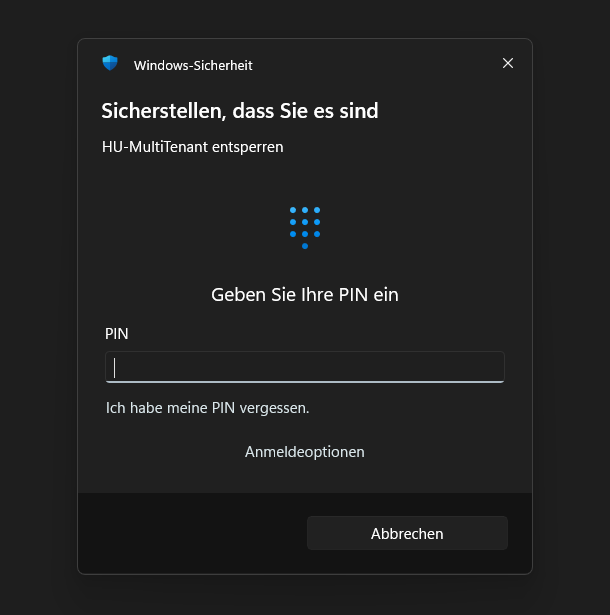

![]()
HU-MultiTenant
Microsoft 365 und Intune für mehrere Tenants aus einer Oberfläche: PowerShell im Tenant-Kontext mit eigener Snippet-Bibliothek, fertige Reports als Extensions, App-Verteilung mit Update-Erkennung, Wartungsskripte, Tenant-Vergleich, Konfigurations-Backup und das Ablaufdatum der Client Secrets im Blick.
Neu hier? Einstieg zeigt typische Situationen aus dem Alltag, Funktionen alles auf einer Seite.
1Einrichten
Tenant einrichten (empfohlen)
- ⚙ Einstellungen › Reiter Tenants › ➕ Tenant einrichten (Admin-Anmeldung) … – beim allerersten Start wird das gleich angeboten.
- Schlüssel (kurz, eindeutig, z. B.
Schule-1– so heißt der Tenant in Skripten als$TenantKey) und auf Wunsch einen Anzeigenamen eingeben (leer = Name der Organisation). - Rechte prüfen: vorausgewählt ist Lesen + verteilen (alle Reiter lesen, dazu Apps hochladen, Wartung anlegen, Jetzt ausführen); Nur lesen lässt diese Schreibrechte weg. Fehlt später ein Recht, bietet die App nach dem Lauf an, genau dieses zu erteilen. Weitere per Haken oder unter Weiteres Recht (z. B.
Mail.Sendfür eigene Skripte). Rot = weitreichendes Recht – wird nicht gesperrt, aber eigens bestätigt. Rot sind auch zwei Standard-Rechte: Geräteaktionen (PrivilegedOperations.All– erlaubt auch Löschen und Zurücksetzen von Geräten) und Wartungsskripte (DeviceManagementScripts.ReadWrite.All– Skripte als SYSTEM auf allen Geräten). Wer Wartung und „Jetzt auf Gerät ausführen“ nicht braucht, hakt sie ab. - Im Browser anmelden und einrichten – mit dem Admin-Konto anmelden und bei der Microsoft-App Microsoft Graph Command Line Tools auf Akzeptieren klicken.
- HU-MultiTenant legt im Tenant die App-Registrierung HU-MultiTenant an, erzeugt auf diesem PC ein Zertifikat, erteilt die Rechte (Administratorzustimmung), testet die Anmeldung (bis zu 2 Minuten, Entra muss das erst verteilen) und trägt den Tenant ein. Bei einem Fehler wird Angelegtes wieder entfernt.
- Nächster Tenant: neuer Schlüssel, nochmals anmelden. Danach Speichern.
Kein Dialog? Dann besteht schon eine Zustimmung – möglicherweise für alle Benutzer (z. B. von früherem
Connect-MgGraph). HU-MultiTenant zeigt das nach der Anmeldung im Protokoll des Fensters an und verlinkt ins Entra Admin Center; geändert wird nichts. Empfehlung: bei der Unternehmensanwendung Microsoft Graph Command Line Tools unter Eigenschaften „Zuweisung erforderlich“ einschalten und nur die Admin-Konten zuweisen.Zertifikat statt Secret: Der private Schlüssel liegt nicht exportierbar im Zertifikatspeicher deines Windows-Benutzers (certmgr.msc › Eigene Zertifikate, Name HU-MultiTenant …). Er kann nicht kopiert und nicht abgetippt werden. Gültigkeit 12 Monate; 30 Tage vor Ablauf erneuert HU-MultiTenant es beim Start automatisch (ohne Admin), von Hand mit Zertifikat erneuern. Ein zweiter PC braucht ein eigenes Zertifikat: dort den Tenant ebenfalls einrichten.
Umsteigen von Secret auf Zertifikat: den bestehenden Tenant einfach einrichten – HU-MultiTenant erkennt ihn an der Tenant-ID und behält Schlüssel und Einstellungen. Danach die alte App-Registrierung (mit Secret) im Entra Admin Center löschen. Das alte Secret auf diesem PC löscht HU-MultiTenant selbst.
Tenant manuell anlegen (App-ID und Secret)
Für eine selbst angelegte App-Registrierung mit Client Secret – Schritt für Schritt in INSTALL.md im Programmordner.
- ⚙ Einstellungen › Reiter Tenants › + Manuell
- Anzeigename, Schlüssel (kurz, eindeutig, z. B.
Tenant-1– so heißt der Tenant in Skripten als$TenantKey), Tenant-ID, Anwendungs-ID, Domäne. - 🔐 Secret eingeben … – Wert einfügen. Gespeichert DPAPI-verschlüsselt in
%APPDATA%\HU-MultiTenant\, nur für deinen Windows-Benutzer auf diesem PC lesbar. - Verbindung + Secret prüfen – zeigt Anmeldung, Anzahl Berechtigungen und das Ablaufdatum.
- Speichern
| Feld | Bedeutung |
|---|---|
| AD-Schema | VirtualSchool: Rolle = jobTitle, Klasse = department · iPack: Rolle = faxNumber, Klasse = officeLocation · Eigene: Rolle und Klasse aus frei wählbaren Benutzer-Attributen, z. B. employeeType oder onPremisesExtensionAttributes.extensionAttribute1 (für Benutzer-Reports) |
| Secret gültig bis | nur nötig, wenn die App kein Application.Read.All hat |
| Geschützte App-IDs | Apps, die schreibende Extensions (z. B. Enterprise-App-Inventur) nie anfassen. Die eigenen App-IDs aller Tenants sind immer geschützt. |
| Standard-Tenant | wird beim allerersten Start vorgewählt |
| Secret dauerhaft speichern | aus: das Secret wird beim Beenden gelöscht (geteilte PCs) |
⚙ Einstellungen › Allgemein › Autor (Apps und Wartung): steht in Intune bei hochgeladenen Apps als Besitzer und bei Wartungsskripten als Herausgeber (leer: Wartung mit „HU-MultiTenant“). Gilt ab dem nächsten Hochladen.
Ebenfalls unter Allgemein: Quelle für App-Updates (winget-Quelle, Standard winget), Backup-Ordner (leer = lokal unter %LOCALAPPDATA%) und Backup – automatisch beim Start einmal täglich für alle Tenants (Standard an) und wie viele Stände je Tenant bleiben (Standard 30) und nach wie vielen Tagen sie ablaufen (Standard 365, 0 = nie). Abgelaufene Stände und Sicherungen vor dem Zurückschreiben werden beim nächsten Backup gelöscht; der neueste vollständige Stand bleibt immer.
Setup-Ordner (Apps): Beim Hinzufügen kopiert HU-MultiTenant die Setup-Datei (bei „Ganzen Ordner mitpacken“ den Ordner) nach <Setup-Ordner>\<App>\<Version>; je App bleiben die letzten zwei Versionen. Danach kann der Download weg. Vorschlag: OneDrive\HU-MultiTenant-Setups (gesichert, auf jedem PC da), ohne OneDrive lokal unter %LOCALAPPDATA%. Vorhandene übernehmen kopiert die Setups bestehender Bibliotheks-Apps, die noch woanders liegen.
Sperre
Warum? Mit HU-MultiTenant hat man Zugriff auf mehrere Tenants gleichzeitig – entsprechend groß ist die Verantwortung. Sperre und Not-Aus sind eine zusätzliche Sicherheitsebene: Sie sollen verhindern, dass jemand am unbeaufsichtigten PC in wenigen Sekunden etwas in allen Tenants verändert, und erlauben bei Verdacht auf Schadsoftware, die gespeicherten Zugänge sofort zu entfernen.
⚙ Einstellungen › Allgemein › Sperre: zuerst PIN festlegen …, dann sperren nach … Minuten ohne Eingabe in HU-MultiTenant und auf Wunsch auch beim Start. Entsperrt wird mit Windows Hello (Gesicht, Fingerabdruck, Windows-PIN) oder der PIN; Strg+L sperrt sofort. Laufende Aufträge laufen im Hintergrund weiter; die Handy-Fernbedienung kann – wenn so eingestellt (Standard) – auch bei gesperrter App starten. Das ist ein Schutz gegen schnelles Mitbenutzen am offenen PC – der eigentliche Schutz bleibt die Windows-Sperre. PIN vergessen und kein Hello: in Config\settings.json "lockEnabled": false setzen.


Not-Aus (⛔ oben rechts): bei Verdacht auf Schadsoftware nach Rückfrage alle auf diesem PC gespeicherten Secrets und Zertifikate von HU-MultiTenant löschen, die Handy-Fernbedienung beenden, gekoppelte Handys entfernen und HU-MultiTenant beenden. Danach öffnen sich die App-Registrierungen der Tenants – dort die Secrets widerrufen, denn bereits kopierte Secrets bleiben sonst gültig (Zertifikate sind nicht kopierbar). Anschließend die Tenants neu einrichten. Nur einen Tenant sperren: Einstellungen › Tenants › Zertifikat auf diesem PC löschen.
App-Sicherung
⚙ Einstellungen › Sicherung (ab 2.5.9): Ordner wählen (auch Netzwerkfreigabe oder USB), Kennwort festlegen … (mindestens 10 Zeichen – ohne Kennwort ist keine Sicherung zu öffnen), dann Jetzt sichern oder automatisch täglich/wöchentlich. Gesichert werden Einstellungen und Tenants, Snippets, Wartungsskripte, Apps, Teams-Aufträge samt Zielen (Webhook-Adressen), Fensterzustand und die Daten der Zusatzmodule; auf Wunsch auch die eigenen Muster-Pakete samt Mustertenant und die Tenant-Backups. Nicht enthalten: Secrets und Zertifikate, gekoppelte Handys, Freigaben der Fernbedienung und die Sperr-PIN. Sicherung prüfen … testet eine Datei, ohne etwas zu schreiben; Wiederherstellen … zeigt die Bereiche zur Auswahl – Snippets, Wartungsskripte, Teams-Aufträge und Teams-Ziele sind orange und nicht vorgewählt (sie enthalten Skripte bzw. Webhook-Adressen; nur anhaken, wenn die Sicherung von dir stammt) –, legt den aktuellen Stand vorher unter %APPDATA%\HU-MultiTenant\Wiederherstellung ab und sagt danach, was noch zu tun ist (Secrets, Zusatzmodule). Anschließend startet HU-MultiTenant von selbst neu. Automatische Sicherungen melden sich mit einem kleinen Hinweis unten rechts; 💾 in der Kopfzeile zeigt Fortschritt und letzte Sicherung.
Wichtig: Vergessenes Kennwort = Sicherung verloren (Kennwort im Kennwort-Manager aufbewahren; das für die Automatik gespeicherte gilt nur auf diesem PC). Die Sicherungsdatei wie ein Geheimnis behandeln – sie enthält verschlüsselt auch Teams-Webhook-Adressen. Nur eigene Sicherungen wiederherstellen: Snippets und Wartungsskripte daraus laufen danach mit den Rechten der Tenants.
Verknüpfung
Beim ersten Start legt HU-MultiTenant den Starter HU-MultiTenant.exe selbst an und fragt einmal, ob ein Symbol auf den Desktop soll, und bietet den Einstieg an. Später: ⚙ Einstellungen › Allgemein › Desktop-Verknüpfung oder Startmenü-Eintrag. Dabei entsteht HU-MultiTenant.exe im Programmordner: eigenes Logo, kein Konsolenfenster, an die Taskleiste anheftbar. Ohne Administratorrechte.
2Oberfläche
| Bereich | Inhalt |
|---|---|
| Titelleiste | Version, Warnung bei bald ablaufenden Secrets (Klick öffnet die Tenants), 🛠 Berechtigungen, ⚙ Einstellungen, 🛟 Support (Protokolle anonymisiert als ZIP, per E-Mail oder GitHub-Issue), ? Anleitung, Update |
| Tenant-Leiste | nur im Reiter Extensions: Tenant für die Extensions, Status (● grün = verbunden, gelb = Berechtigungen fehlen, rot = Fehler), Secret-Ablauf, Verbinden / Trennen |
| links | Extensions mit Suche, ↻ lädt neu (eigene Extensions ohne Neustart) – in Apps, Wartung und Analyse ausgeblendet; ein Klick auf eine Extension wechselt zum Reiter Extensions |
| rechts | Reiter ⚡ Quick Script (Start-Reiter), 🧩 Extensions, 📦 Apps (Bibliothek, In Intune, Updates), 🛠 Wartung und 🔍 Analyse (Was bekommt …?, Tenant-Vergleich, Backup & Verlauf) |
| Meldungen | Hinweise und Rückfragen im App-Stil (ab 2.6.0). Rückfragen, die im Tenant schreiben, löschen oder Rechte erteilen, sind Warnungen: oranges Zeichen, roter Ja-Knopf, „Nein“ vorgewählt (heller Rahmen = das löst Enter aus). Strg+C kopiert die ganze Meldung. Automatische App-Sicherungen melden sich unten rechts. |
3Quick Script
Eigene PowerShell-Skripte direkt gegen einen Tenant – in einem eigenen Runspace, die Oberfläche bleibt bedienbar.
- Tenant oben im Reiter wählen (eigene Auswahl, unabhängig von den Extensions).
- Snippet wählen, Skript in den Editor schreiben oder eine
.ps1-Datei aus dem Explorer ins Codefeld ziehen (wird nur geladen, nicht ausgeführt). - Strg+Enter – verbindet bei Bedarf automatisch und führt aus. Ausgabe erscheint Zeile für Zeile, Esc bricht ab. Alle Tasten: Tastenkürzel.
Eigene Snippets schreiben
Im Skript stehen $Token, $TenantKey und die Graph-Funktionen schon bereit. Alles zum Schreiben – Funktionen, Regeln, Parameter, Vorlagen – steht in SNIPPET-DEVELOPMENT.md im Programmordner (online: GitHub).
Lässt du das Snippet von einem KI-Assistenten schreiben, gib ihm den Skill skills/hu-snippet mit (Anleitung): Vorlagen und ein Prüfprogramm sorgen dafür, dass der Code beim ersten Lauf funktioniert.
Mehrere Tenants
Mehrere ▾ öffnet eine Liste mit Haken. Ab zwei Haken läuft das Skript nacheinander je Tenant – $Token und $TenantKey gelten jeweils für den laufenden Tenant. Ausgegebene Objekte bekommen die Spalte Tenant, ein Fehler bricht nur diesen Tenant ab. Keine schaltet zurück auf die Einzelauswahl.
Parameter
Enthält ein Snippet Zeilen wie # @param Tage|int|Ohne Sync seit Tagen|30, erscheinen über dem Editor Eingabefelder. Die Werte bleiben je Snippet gemerkt, solange das Programm läuft.
DryRun, WhatIf, Probelauf o. ä. aus, fragt das Tool vor dem Start nach. Setzt der Code die Variable selbst ($DryRun = …), wirkt das Feld nicht – das steht dann in der Ausgabe.Tabelle und Export
Gibt das Skript Objekte aus ([pscustomobject], Select-Object), wird 📊 Tabelle aktiv: Filter über alle Spalten, CSV … (Semikolon, UTF-8), Excel … (benötigt das Modul ImportExcel) und Kopieren für Excel.
Verlauf
🕒 Verlauf zeigt alle Läufe mit Zeit, Snippet, Tenants, Dauer und Ergebnis. Doppelklick öffnet das komplette Protokoll (Logs\QuickScript\, aufbewahrt wie das Tagesprotokoll, Standard 30 Tage).
Write-Host -ForegroundColor erscheint farbig, Write-Warning orange, Fehler rot mit Zeilennummer. Ausgabe kopieren legt die ganze Ausgabe in die Zwischenablage. Rechtsklick in die Ausgabe (auch im Protokoll der Extensions): Kopieren, Alles kopieren, Ausgabe leeren.
4Snippets
Die Auswahl oben im Reiter lädt ein Snippet sofort. Darunter stehen Name und Kurzbeschreibung; ein oranger Punkt ● bedeutet ungespeicherte Änderungen – beim Wechseln und Beenden fragt das Tool nach.
| Knopf | Wirkung |
|---|---|
| Neu | leerer Editor |
| 💾 Speichern | aktuelles Snippet überschreiben (neues: Name + Beschreibung) |
| Speichern unter … | als neues Snippet mit eigenem Namen und Beschreibung |
| 📚 Verwalten … | Bibliothek im eigenen Fenster |
Verwalten
- Favoriten: auf den Stern ☆ in der Zeile klicken (oder ★ Favorit für alle markierten). Favoriten stehen in der Auswahl im Quick Script ganz oben; nur Favoriten filtert die Liste. Im Quick Script schaltet der Stern vor dem Namen das geladene Snippet um.
- Suche in Name, Beschreibung und Code
- Eintrag markieren → Name / Kurzbeschreibung ändern → Änderung übernehmen; rechts die Code-Vorschau
- ▲ ▼ Reihenfolge, A-Z, Neueste zuerst, Duplizieren, 🗑 Löschen (mehrere mit Strg/Umschalt)
- Exportieren … markierte (oder alle) als JSON, Importieren … fügt hinzu – gleiche Namen: ersetzen oder als Kopie
- Kategorien: Feld Kategorie (oder vorhandene wählen) → übernehmen, gilt für alle markierten. Die Liste ist nach Kategorien gruppiert und filterbar.
- Beispiele lädt 12 fertige Snippets (Kategorie Beispiele) – vorhandene gleichen Namens bleiben unangetastet.
- Verlauf zeigt die Läufe des markierten Snippets; darunter steht Zuletzt ausgeführt.
- Doppelklick oder ▶ Im Editor öffnen lädt das Snippet
skills\hu-snippet schreibt ein KI-Assistent Snippets, die beim ersten Lauf funktionieren – siehe KI-Skills.5Extensions
- Tenant in der Tenant-Leiste wählen.
- Extension links wählen – rechts stehen Beschreibung, benötigte Berechtigungen und Parameter.
- Optional DRY-RUN (nur Vorschau, bei Extensions, die das unterstützen).
- ▶ STARTEN – läuft im Hintergrund, Fortschritt im Protokoll. Reports landen in
Reports\HU-Reports_JJJJ-MM-TT\(Knopf Reports).
Kennzeichen in der Liste: DRY-RUN = Vorschau möglich, BATCH = für mehrere Tenants geeignet, SCHREIBT = verändert den Tenant (vor dem Start zusätzliche Rückfrage).
Berechtigungen
🛠 Berechtigungen zeigt je Tenant, welche Graph-Anwendungsberechtigungen erteilt sind – mit Risiko, Beschreibung und welche Extension sie nutzt. Ist eine Extension gewählt, steht oben, ob ihre Berechtigungen vorhanden sind. Alle Tenants vergleichen zeigt alles in einer Tabelle. Verbinden ist dafür nicht nötig. Nach einer Änderung in Entra (Administratorzustimmung) ↻ Neu lesen.
Fehlende Rechte erteilen … zeigt alle Rechte mit ✔ erteilt / ✖ fehlt – vorausgewählt sind die fehlenden Standard-Rechte und die der gewählten Extension; eigene (z. B. für Snippets) unter Weiteres Recht. Ein Global Administrator meldet sich im Browser an, die gewählten Rechte werden der App zusätzlich erteilt – entfernt wird nichts. Weitreichende Rechte sind rot und werden eigens bestätigt. Neue Rechte stehen nach etwa einer Minute im Token, dann ↻ Neu lesen. Danach gelten alle gewählten Rechte als erteilt – Weitere Rechte erteilen bietet sie im selben Tenant nicht noch einmal an. Öffnet ein Zusatzmodul das Fenster mit bestimmten Rechten, sind nur genau diese angehakt. Funktioniert für eingerichtete und manuell angelegte Tenants.
✎ Entra-Schreibrechte an … erteilt nur für den gewählten Tenant die 4 Rechte für Übertragen und Zurückschreiben (Conditional Access, Autorisierung, Administratorzustimmung, Verzeichniseinstellungen). Nach der Arbeit Entra-Schreibrechte aus … – entzieht genau diese wieder. Andere Schreibrechte (Intune, Benutzer, Apps) bleiben unberührt. Die Statuszeile zeigt, ob und seit wann sie an sind; nach 7 Tagen erinnert das Programm beim Start.
Eigene Extensions
Vorlage Extensions\Template.ps1 kopieren, Kopf ausfüllen (.REQUIRED_PERMISSIONS, .PARAM, .DRY_RUN_CAPABLE, .MODE, .RUNTIME) und ↻ drücken. Details: EXTENSION-DEVELOPMENT.md. Eigene Extensions bleiben bei Updates erhalten. Für KI-Assistenten gibt es den Skill skills/hu-extension mit Prüfprogramm (Anleitung).
skills\hu-extension entstehen Extensions samt Rechten, Probelauf und Fehlerbehandlung – siehe KI-Skills.6KI-Skills
Snippets und Extensions muss man nicht von Hand schreiben: Ein KI-Assistent kann das übernehmen. Damit der Code beim ersten Lauf funktioniert, liegen im Programmordner unter skills\ zwei fertige Anleitungen mit geprüften Vorlagen und einem Prüfprogramm.
# @param-Felder, Graph-Aufrufe, Probelauf. Vorlagen: lesen, ändern, Teams-Meldung.Invoke-*-Funktion, Rechte, Fehlerbehandlung. Vorlagen: Bericht und ändernde Extension mit Probelauf.So nutzt du sie
- Ordner
skills\hu-snippetbzw.skills\hu-extensionim KI-Assistenten als Skill hinzufügen. Geht das nicht:SKILL.mdin den Chat kopieren oder hochladen und dazusagen, dass sich der Assistent genau daran halten soll. - Beschreiben, was das Snippet oder die Extension tun soll (z. B. „Geräte zeigen, die seit 30 Tagen nicht synchronisiert haben“).
- Der Assistent führt das Prüfprogramm aus und behebt alle FEHLER, bevor er den Code übergibt.
- Snippet im Reiter Quick Script einfügen bzw. Extension in
Extensions\legen und ↻ drücken.
Code selbst prüfen
Das Prüfprogramm liest nur den Code, es verbindet sich mit nichts und führt nichts aus:
powershell -NoProfile -File skills\hu-snippet\tools\Test-HUSnippet.ps1 -Path .\mein-snippet.ps1
powershell -NoProfile -File skills\hu-extension\tools\Test-HUExtension.ps1 -Path .\Device-MeinReport.ps1FEHLER = läuft so nicht oder ist unsicher, WARNUNG = prüfen, ob es Absicht ist.
DryRun bzw. DRY-RUN) in einem Test-Tenant ausprobieren. Das Prüfprogramm findet typische Fehler, ersetzt aber keinen Test. Einzelheiten: skills/README.md.7Apps verteilen
Programme (MSI, EXE) und Microsoft-Store-Apps an einen oder mehrere Tenants verteilen. Oben links umschalten: Bibliothek (eigene Apps, die HU-MultiTenant paketiert und hochlädt) oder In Intune (alle vorhandenen Apps verwalten).
- + Setup … oder die Setup-Datei auf die Liste ziehen. Name, Version, Hersteller, Befehle und Erkennung werden ausgelesen – bei MSI vollständig, bei EXE mit stillem Schalter (Inno, NSIS, InstallShield, WiX, Advanced Installer, Squirrel). Auch ein Skript (
.ps1,.cmd,.bat) geht, z. B. ein Plugin-Installer ohne eigenes Setup: Name und Version kommen aus dem Ordnernamen (HUScroll-0.5.2), der ganze Ordner wird mitgepackt; hat das Skript die Schalter-AllUsers/-Uninstall, stehen sie schon in den Befehlen. Die Erkennung (meist Datei) legst du selbst fest. Intune startet Skripte in einer 32-Bit-PowerShell. - Kategorien (Unternehmensportal): mit Komma getrennt eintragen oder Auswahl … – lädt die Kategorien der angehakten Tenants. Neue Kategorien legst Du in der Auswahl unter Neue Kategorie › Anlegen … an (mit Rückfrage, auch um eine vorhandene in fehlenden Tenants zu ergänzen; im Intune-Portal erst nach Neuladen der Seite sichtbar) und mit Löschen … oder Rechtsklick auf eine Kategorie wieder löschen. Fehlt eine Kategorie beim Hochladen in einem Tenant, wird sie dort übersprungen und gemeldet; leer = in Intune nichts ändern.
- Testinstallation in der Windows Sandbox – schlägt Erkennung, Deinstallation und Symbol vor (siehe unten).
- Tenants anhaken, Ziel wählen – Gruppe (🔍 sucht in den angehakten Tenants und zeigt, wo eine fehlt), Alle Geräte, Alle Benutzer oder Keine Zuweisung – dazu Erforderlich, Verfügbar (Unternehmensportal) oder Deinstallieren, optional Frist und Hinweise.
- ⬆ Hochladen & zuweisen – das Paket wird einmal gebaut und in jeden Tenant hochgeladen; die Geräte holen die App beim nächsten Sync.
- 📊 Status – je Gerät Installiert / Fehlgeschlagen / Nicht installiert mit Fehlertext und Export (der Intune-Bericht braucht nach dem Zuweisen oft 1–2 Stunden).
Testinstallation (Windows Sandbox)
Das Setup läuft in einem Wegwerf-Windows, dein PC bleibt sauber. Danach: Vorschlag übernehmen? (Erkennung, Deinstallationsbefehl, Symbol). Deinstallation mittesten prüft auch das Entfernen. Der Test meldet Fenster, die unter Intune hängen würden, Desktop-Verknüpfungen und Installationen nur ins Benutzerprofil; bei Fehlern stehen die Protokolle gleich in der Ausgabe. Stille Schalter werden automatisch ergänzt (Inno: /ALLUSERS beim Installieren, /VERYSILENT und Beenden der laufenden App beim Deinstallieren). Die Sandbox schließt sich danach selbst (Sandbox offen lassen zum Nachsehen).
32 oder 64 Bit: Intune startet Installations- und Deinstallationsbefehle aus einem 32-Bit-Prozess (Intune Management Extension). Ein schlichtes powershell.exe ist dort die 32-Bit-PowerShell – $env:ProgramFiles zeigt dann auf Program Files (x86), Registry-Zugriffe landen unter WOW6432Node. Für Skripte schlägt HU-MultiTenant deshalb %SystemRoot%\Sysnative\…\powershell.exe vor (64-Bit). Die Testinstallation startet standardmäßig wie Intune; mit Start 64-Bit (eigener PC) läuft sie wie ein Aufruf am eigenen PC.
Abhängigkeiten aus der Bibliothek werden in der Sandbox vorher installiert (z. B. Greenshot vor einem Greenshot-Plugin). Danach prüft der Test die Erkennungsregel wie Intune: „NICHT gefunden“ nach der Installation heißt, Intune würde „fehlgeschlagen“ melden; beim Deinstallationstest muss sie danach weg sein. Bei Apps ohne Eintrag in „Apps & Features“ (Skripte, Plugins) zählt dafür nur die Erkennungsregel.
Ist die Sandbox nicht aktiviert, öffnet sich ein Fenster mit Sandbox jetzt aktivieren (Administratorrechte, Neustart). Voraussetzung: Windows 10/11 Pro, Education oder Enterprise mit Virtualisierung; es läuft immer nur eine Sandbox.
Tipp – auch ohne Intune nützlich: Die Testinstallation braucht keinen Tenant und kein Hochladen. Damit lassen sich beliebig viele Programme ausprobieren, ohne den eigenen PC zu verunreinigen: Was installiert es mit, welche Fenster und Verknüpfungen entstehen, lässt es sich sauber entfernen? Nach dem Schließen ist alles weg. Hinweis: Die App-Sandbox hat Internetzugang (Setups, die nachladen, funktionieren), aber keinen Zugriff auf deine Dateien – nur der Setup-Ordner wird schreibgeschützt eingebunden. Die Sandbox für Wartungsskripte läuft dagegen ganz ohne Netzwerk.
Neue Version
Neue Setup-Datei auf die Liste ziehen (oder in der App Andere Datei …) und Ja wählen: dieselbe Intune-App wird aktualisiert, Zuweisungen bleiben. Versionsnummern im Namen werden dabei ignoriert; neue Apps bekommen einen Namen ohne Version vorgeschlagen. Bei EXE-Setups mit Registry-Erkennung die Versionsprüfung einschalten – sonst gilt die alte Version auf den Geräten als „installiert“.
Updates (winget)
Ansicht Updates (neben Bibliothek und In Intune): vergleicht die Setup-Apps der Bibliothek mit dem winget-Repository. Braucht winget auf deinem PC (App-Installer aus dem Microsoft Store; ist das Modul Microsoft.WinGet.Client installiert, wird es bevorzugt). Quelle: Einstellungen › Allgemein › Quelle für App-Updates – Standard winget (Community-Repository), sonst jede auf deinem PC eingerichtete Quelle (winget source list, z. B. eine eigene REST-Quelle).
- ↻ Nach Updates suchen – je App einige Sekunden. Apps ohne winget-ID bekommen sie automatisch, wenn genau ein Paket gleich heißt (orange Meldung – bitte prüfen); sonst winget-ID zuordnen … (oder Doppelklick): Treffer anklicken oder ID eintragen.
- Spalten: Version in der Bibliothek, neueste bei winget, Status (Update verfügbar, aktuell, Intune noch alt) und Stand je Tenant.
- ⬇ Neue Version holen: lädt den Installer (x64, maschinenweit, bei MSI-Apps bevorzugt MSI) nach
Downloads\HU-App-Updates\App\Versionund übernimmt ihn als neue Version der App – wie „Andere Datei …“. Eigene Installationsschalter einer EXE bleiben; fehlen welche, kommen sie aus dem winget-Manifest. Hochgeladen wird noch nichts. - Weiter in der Bibliothek: Installationsbefehl prüfen → Testinstallation in der Sandbox → Hochladen mit Pilotgruppe → später freigeben.
Abhängigkeiten (Treiber, Laufzeitumgebungen)
Unter Abhängigkeiten: + Bibliothek … (eigene App, wird mit hochgeladen, auch mehrstufig) oder + Intune … (schon vorhandene Win32-App, je Tenant per Name verknüpft). Mit automatisch mitinstallieren installiert Intune sie vor der App. Store-Apps können keine Abhängigkeit sein.
Weitere Optionen
| Option | Wirkung |
|---|---|
| Symbol … | Bild, ICO oder EXE für das Unternehmensportal (PNG, max. 256 px). Automatisch aus Setup, Testinstallation oder Microsoft Store. |
| Ohne Desktop-Verknüpfung | ins Paket kommt HU-Install.ps1, das nach dem Setup neue Desktop-Verknüpfungen entfernt – funktioniert bei jedem Setup. |
| Pilotgruppe | die App geht zuerst nur an diese Gruppe; Für alle freigeben ergänzt danach das eigentliche Ziel. |
| Store-App | + Store-App, Adresse von apps.microsoft.com oder nur die ID (z. B. 9NKSQGP7F2NH) einfügen – kein Paket nötig, aktualisiert sich selbst. |
In Intune (vorhandene Apps)
Zeigt alle Windows-Apps der angehakten Tenants, auch von Hand angelegte. Gleiche Namen werden über die Tenants zusammengefasst; die Liste zeigt „alle 2“, „nur: …“ oder „fehlt: …“ (Maus darüber: alle Tenants), alle hakt alle Tenants an bzw. ab. Oben rechts steht je Tenant der Installationsstand (installiert, fehlgeschlagen, ausstehend – wie im Portal). Jede Änderung gilt für alle Tenants, in denen es die App gibt:
- Zuweisungen ergänzen (gleiche Gruppe = ersetzen, auch Ausschluss) oder markierte entfernen
- Abhängigkeiten und Ersetzungen (Win32), inkl. „Benötigt von“ / „Ersetzt durch“
- Eigenschaften: Name, Hersteller, Beschreibung, Symbol, Kategorien (Auswahl …; unterschiedliche Kategorien je Tenant werden darunter angezeigt)
- 📊 Status, Im Portal öffnen, Löschen … – bei mehreren Tenants per Haken wählen, in welchen; danach doppelte Rückfrage
Tools\.DeviceManagementApps.Read.All und Group.Read.All. Hochladen und Zuweisen: DeviceManagementApps.ReadWrite.All – fehlt es, bietet die App nach dem Lauf an, es zu erteilen.8Wartung (Remediations)
Wartungspakete prüfen regelmäßig etwas auf den Geräten und reparieren es bei Bedarf – z. B. volle Festplatte, abgeschalteter Dienst. Ein Paket besteht aus Prüfskript (exit 1 = Problem) und optional Reparaturskript; ohne Reparatur wird nur berichtet. Oben links: Bibliothek oder In Intune.
- + Neu oder Beispiele … (fünf fertige Pakete).
- Mit KI erstellen: Aufgabe in einem Satz → Prompt kopieren → in ChatGPT, Claude oder Copilot einfügen → Antwort kopieren → Antwort einfügen (wird in Prüf- und Reparaturskript aufgeteilt). Der Prompt bittet die KI, änderbare Werte gleich als Felder (
# @param) anzulegen. - ✔ Prüfen findet typische Fehler (fehlendes
exit 1, Neustart, Eingaben, PowerShell-7-Syntax, Benutzerpfade unter SYSTEM, Secrets im Klartext). Prüfskript hier ausführen testet das Prüfskript auf deinem PC. - 🧪 In Sandbox testen (auch unter In Intune): läuft in der Windows Sandbox wie bei Intune ab – als SYSTEM bzw. Benutzer, 64- oder 32-Bit, ohne Netzwerk: Prüfskript → bei
exit 1Reparatur → Prüfskript erneut. Die Ausgabe zeigt je Schritt Exit-Code, Dauer, Konto und Text (Warnung über 2.048 Zeichen) und das Ergebnis, wie Intune es melden würde. Die Sandbox ist ein frisches Windows: Software, die das Skript sucht oder entfernt, ist dort meist nicht installiert – geprüft werden Ablauf, Exit-Codes, Ausgabe und Rechte. Mit Sandbox offen lassen lassen sich dort weitere Fälle nachstellen (z. B. Benutzer deaktivieren) und der Test mit& C:\HUTest\HURemTest.ps1erneut starten. - Felder statt Werte im Code: eine Zeile
# @param Name|Typ|Beschriftung|Standardam Skriptanfang (Typenstring,int,bool,choicewie im Quick Script) wird zu einem Eingabefeld über den Skripten. Der Wert steht direkt darunter im Skript ($Name = 'Wert' # @value) – Intune kennt keine Parameter, hochgeladen wird genau das, was im Editor steht; ein Feld gilt für Prüf- und Reparaturskript. Dadurch funktioniert es auch unter In Intune: Wert ändern → Änderungen speichern. Werte als Felder übernehmen macht aus einfachen Zuweisungen am Skriptanfang ($PwPlain = '…') solche Felder. Nicht zusammen mit einemparam()-Block verwenden. - Tenants, Ziel, Zeitplan (täglich, stündlich, einmal) und Kontext → ⬆ Hochladen & zuweisen (optional Pilotgruppe wie bei Apps).
- 📊 Ergebnisse: je Gerät kein Problem / Problem / behoben / Fehler mit Skript-Ausgabe und Export. ▶ Jetzt auf Gerät … startet das Paket sofort (Gerät muss online sein).
In Intune (vorhandene Wartungsskripte)
Wie bei den Apps: alle Skripte der angehakten Tenants, auch die von Microsoft (nur lesen und zuweisen), nach Namen zusammengefasst; Filter Nicht überall zeigt Skripte, die in einem Tenant fehlen. Rechts stehen Zusammenfassung (ohne Problem, Problem, behoben, Fehler), Zuweisungen mit Zeitplan und „mit Reparatur“ sowie Skripte und Eigenschaften.
- Skripte ändern: werden vor dem Speichern geprüft. Unterscheiden sich die Skripte zwischen Tenants (z. B. eigene IDs), steht das darüber – sie werden nur überschrieben, wenn du sie im Editor änderst, und nur nach Rückfrage.
- In andere Tenants kopieren …: legt das Skript mit Hersteller und Kontext in weiteren Tenants an, auf Wunsch mit Zuweisungen (Gruppen per Name; fehlt eine: nicht zuweisen oder Alle Geräte). Gibt es dort schon eines mit diesem Namen, wird der Tenant übersprungen.
- In Bibliothek übernehmen: z. B. um ein Skript mit KI zu überarbeiten und neu zu verteilen.
- Rechtsklick › Duplizieren … (links in der Liste): Kopie mit neuem Namen in denselben Tenants, ohne Zuweisungen – sie läuft also noch auf keinem Gerät. In der Bibliothek legt Rechtsklick › Duplizieren eine lokale Kopie an.
- 📊 Ergebnisse, ▶ Jetzt auf Gerät …, Löschen … wie oben bzw. wie bei den Apps.
WIN-Updates
Dritter Knopf oben links neben Bibliothek und In Intune. Links Tenants anhaken und eine Ansicht wählen; die Daten werden gleich gelesen und nach 15 Minuten aufgefrischt (↻ liest sofort neu).
- Übersicht: Windows-Versionen je Tenant – Geräte gesamt und davon mit neuestem Sicherheitsupdate, neuester Patch und ein Support-Hinweis (geschätzt: „abgelaufen“ = seit 75 Tagen kein Sicherheitspatch im Katalog, keine offizielle Lifecycle-Angabe). Doppelklick zeigt die Geräte dieser Version.
- Geräte: Patchstand und fehlende Updates je Gerät, letzter Sync, Beitritt und Besitz. nur registriert (z. B. private Geräte) erreicht nur der Update-Ring.
- Ringe und Profile: Eintrag markieren → unten Zuweisungen, Einstellungen, Pause und Entfernen wie bei In Intune. Update-Ringe lassen sich nur löschen, wenn sie nicht zugewiesen sind; zugewiesene Feature-Updates und Treiber-Richtlinien nur nach einer zweiten Rückfrage. Ist ein Ziel schon zugewiesen, bleibt es unverändert (samt Filter). Haben die Tenants unterschiedliche Werte, zeigt das Detail die des ersten; gespeichert wird je Tenant nur, was dort anders ist. Die Freigabeart einer Treiber-Richtlinie ist nach dem Anlegen fest.
- Stand vorher: Vor Einstellungen, Zuweisen, Pause an/aus und Löschen legt die App den bisherigen Stand samt Zuweisungen in
%APPDATA%\HU-MultiTenant\WinUpdates-vorherab (JSON, zum Nachsehen; ein Zurückspielen gibt es noch nicht). - Treiber: anstehende Treiber je Richtlinie und Tenant; markieren → Freigeben ab, Aussetzen oder Ablehnen. Freigegebene Treiber lassen sich nur aussetzen.
- Neu anlegen: + Neuer Update-Ring …, + Neues Feature-Update …, + Neue Treiber-Richtlinie …, + Neues Expedite … – in den angehakten Tenants, ohne Zuweisung. Gibt es den Namen schon, fragt die App nach. Neue Update-Ringe heben Windows 10 nur auf Windows 11, wenn das Häkchen dafür gesetzt ist.
- Vorlagen: Sichern … speichert markierte Einträge ohne Zuweisungen; Importieren … (oder Datei in die Tabelle ziehen) legt sie in den angehakten Tenants an. Die Vorlagen liegen in
%APPDATA%\HU-MultiTenant\WinUpdates-Vorlagenund kommen mit der App-Sicherung mit. - ? So geht's: kurze Anleitungen mit Knöpfen, die gleich die richtige Stelle öffnen.
DeviceManagementConfiguration.Read.All, DeviceManagementManagedDevices.Read.All; ändern DeviceManagementConfiguration.ReadWrite.All (gilt für alle Geräteprofile; Angebot nach dem Lauf, wenn es fehlt).DeviceManagementScripts.Read.All, anlegen und zuweisen DeviceManagementScripts.ReadWrite.All (Angebot nach dem Lauf, wenn es fehlt), Group.Read.All; für Jetzt auf Gerät zusätzlich DeviceManagementManagedDevices.PrivilegedOperations.All.9Analyse
Vier Ansichten oben links. Die Tenants darunter anhaken (Standard: alle). Was bekommt …? ist nur lesend; im Tenant-Vergleich und im Backup wird nur nach Rückfrage etwas angelegt – immer neu und ohne Zuweisungen, Bestehendes wird nie überschrieben.
Was bekommt …?
Zeigt alles, was eine Gruppe, ein Gerät oder ein Benutzer in den angehakten Tenants bekommt: Apps (mit Absicht erforderlich / verfügbar / deinstallieren), Konfigurationsprofile, Einstellungskatalog, Administrative Vorlagen, Compliance-Richtlinien, Wartungsskripte, Plattformskripte, Feature-, Qualitäts- und Treiber-Updates und Autopilot-Profile.
- Art wählen, Namen eingeben (Gruppe: 🔍 sucht in den angehakten Tenants; Gerät: Name wie in Intune; Benutzer: Benutzername ohne
@domain– passt in jedem Tenant –, UPN oder Anzeigename; dabei zählen auch seine Intune-Geräte und deren Gruppen) → ▶ Anzeigen oder Enter. - Die Tabelle füllt sich je Tenant, sobald er fertig ist. Spalte Über: über welche Gruppe (auch verschachtelt) bzw. Alle Geräte / Alle Benutzer; Status ausgeschlossen, wenn eine Ausschlussgruppe greift.
- Filter: Text (mehrere Wörter: alle müssen vorkommen, z. B.
erforderlich chrome) und Art (App, Compliance, …). Alle Geräte/Benutzer abhaken blendet Zuweisungen aus, die nur über Alle Geräte / Alle Benutzer kommen – übrig bleibt, was gezielt über Gruppen kommt. - 📊 Tabelle / Export: Filter, CSV, Excel (wie angezeigt).
DeviceManagementConfiguration.Read.All, DeviceManagementApps.Read.All, DeviceManagementManagedDevices.Read.All, Group.Read.All, User.Read.All, Device.Read.All (bzw. die vorhandenen ReadWrite-Rechte).Tenant-Vergleich
Stellt den Bestand der angehakten Tenants (mindestens zwei) nebeneinander: Konfigurationsprofile, Einstellungskatalog, Administrative Vorlagen, Compliance, Wartung, Plattform-Skripte, Feature-Updates, Autopilot-Profile, Conditional Access und Apps, dazu alle weiteren Arten aus dem Backup: App-Schutz und App-Konfiguration, Registrierung (Einschränkungen, Statusseite/ESP, Windows Hello), Zuweisungsfilter, ältere Endpunktsicherheit, Qualitäts- und Treiber-Updates, Gerätekategorien, Intune-Rollen, Bereichsmarkierungen u. a. sowie die Entra-Einstellungen (Autorisierungsrichtlinie, Sicherheitsstandards, Authentifizierungsmethoden, Cross-Tenant-Zugriff, benannte Orte, Verzeichniseinstellungen, Geräte-Registrierung, Authentifizierungsstärken, Token- und Zustimmungsrichtlinien, eigene Entra-Rollen, SharePoint/OneDrive- und Berichtseinstellungen). Nicht verglichen werden Domains, Organisation und Rollenzuweisungen – die sind je Tenant naturgemäß verschieden. Gleich heißt: gleicher Name (Groß-/Kleinschreibung egal).
- ▶ Vergleichen – je Tenant ✔ vorhanden oder — fehlt. Nur Unterschiede (Standard) blendet aus, was überall gleich ist; dazu Textfilter und Art.
- Je Tenant: ✔ vorhanden, — fehlt, ? nicht lesbar (Berechtigung oder Fehler – dort wird nichts kopiert). Status: fehlt teilweise, nur in einem, doppelt (wird nicht kopiert) (zweimal im selben Tenant) und Einstellungen abweichend – bei Profilen, Compliance, Feature-Updates, Autopilot, Conditional Access und allen weiteren Arten aus dem Backup (IDs, Zeitstempel und Namen zählen nicht; bei den weiteren Arten auch keine IDs von Gruppen, Apps oder Orten).
- Doppelklick auf eine Zeile, die es in mehreren Tenants gibt: Tabelle der abweichenden Einstellungen (Einstellung, Wert je Tenant; Einstellungskatalog nach Einstellungs-ID, Reihenfolge egal; Skriptinhalte als Kurzform mit Prüfsumme; Gruppen, Benutzer, Rollen, Cloud-Apps und benannte Orte erscheinen mit Namen statt ID, bei Listen steht „(gleich: N)“ und je Tenant nur das Zusätzliche – dieselbe Gruppe mit anderer ID im anderen Tenant gilt also nicht als Unterschied). Geht für alle Arten außer Apps.
- Einen Eintrag markieren → → Übertragen …: Quelle wählen (ein Tenant oder das Muster), dann die Tenants, in denen er fehlt. Je Ziel-Tenant kommt eine Vorschau mit allen Einstellungen, Sperren und Hinweisen; bei mehreren Zielen musst du zur Bestätigung den Namen des Ziel-Tenants eintippen. Angelegt wird neu und ohne Zuweisungen, also noch ohne Wirkung. Danach liest die App nach und vergleicht jede Einstellung mit der Quelle. ↶ Rückgängig … löscht übertragene Einträge wieder – nur, wenn sie seitdem unverändert und nicht zugewiesen sind.
- Haken Muster: Die im Reiter Muster angehakten Pakete laufen als eigene Spalte mit – so siehst du, wo ein Tenant vom Soll-Stand abweicht. Teilpakete prüfen nur ihre eigenen Einträge: Was nicht im Paket ist, zählt nicht als Abweichung (Zelle „nicht im Paket“). Ein Gesamtstand prüft alles – was dort fehlt, ist rot. Die Einträge stammen aus Backup-Ständen; „Einstellungen abweichend“ im Zweifel per Doppelklick prüfen. Beim Übertragen aus dem Muster werden Namen (Gruppen, Orte, Bereichsmarkierungen) im Tenant nachgeschlagen, aus dem der Eintrag stammt.
- 🔗 Zuordnung prüfen (nur lesen): Für die Quelle – die angehakten Muster-Pakete, wenn der Haken gesetzt ist, sonst der neueste vollständige Stand des ersten angehakten Tenants – zeigt die Tabelle jede verwendete Gruppe, jeden benannten Ort, Zuweisungsfilter und jede Bereichsmarkierung und je anderem Tenant: ok (genau einmal unter demselben Namen, Groß/klein egal), fehlt, mehrfach oder nicht prüfbar. Einzelne Benutzer sind nicht zuordenbar; Notfallkonten werden beim Übertragen durch die des Ziels ersetzt, die letzte Zeile zeigt, ob sie je Tenant hinterlegt und aktiv sind. Grundlage für das Übertragen ab 2.4.1.
Backups\<Tenant>\_vor-uebertragen und laufen mit dem Ablaufdatum der Backups ab. Berechtigung: DeviceManagementConfiguration.ReadWrite.All.Backup & Verlauf
Sichert die Konfiguration der angehakten Tenants als JSON-Dateien: Konfigurationsprofile, Einstellungskatalog, Administrative Vorlagen, Compliance, Wartung, Plattform-Skripte, Feature-Updates, Autopilot und Conditional Access, außerdem App-Schutz- und App-Konfigurationsrichtlinien, Registrierung (Einschränkungen, Statusseite/ESP, Windows Hello), Zuweisungsfilter, ältere Endpunktsicherheits-Richtlinien, Qualitäts- und Treiber-Updates, Gerätekategorien, Compliance-Skripte, Benachrichtigungsvorlagen, Nutzungsbedingungen, Unternehmensportal-Branding, Richtliniensätze, App-Kategorien, Defender-Connector sowie eigene Intune-Rollen und Bereichsmarkierungen – jeweils vollständig und, wo es sie gibt, mit Zuweisungen; Apps nur als Liste. Dazu die Entra-Einstellungen der Baseline: Autorisierungsrichtlinie, Sicherheitsstandards, Authentifizierungsmethoden, Administratorzustimmung (Anfragen), Cross-Tenant-Zugriff (Standard und Partner), benannte Orte, Verzeichniseinstellungen (u. a. Kennwortschutz und Sperrschwelle), den Kennwortablauf je Domain, Geräte-Registrierung (Beitritt, lokale Admins), eigene Authentifizierungsstärken, Token- und Zustimmungsrichtlinien, eigene Entra-Rollen und alle Rollenzuweisungen, Ablauf von M365-Gruppen (nur mit Directory.Read.All), Organisation sowie SharePoint/OneDrive- und Berichtseinstellungen. Je Tenant und Zeitpunkt ein eigener Ordner (Stand).
- 💾 Backup jetzt – je Tenant 1–3 Minuten. Automatisch: Einstellungen › Allgemein › Backup „beim Start, einmal täglich“ (Standard: an); dort auch Ordner, wie viele Stände je Tenant bleiben (Standard 30) und das Ablaufdatum (Standard 365 Tage). Backups enthalten vollständige Richtlinien und bleiben nur lokal.
- Verlauf: Tenant und zwei Stände wählen → ▶ Anzeigen: neu, gelöscht, Einstellungen geändert, Zuweisungen geändert, Beschreibung geändert, umbenannt. Spalte Geändert von kommt aus dem Intune-Protokoll (wer hat dazwischen geändert). Rechts „(nur linken Stand zeigen)“ listet einen einzelnen Stand. Eingrenzen: Textfilter, Auswahl Art (z. B. nur Entra-Rollenzuweisungen, mit Anzahl je Art) und Nur Änderungen – auch kombiniert. War ein Stand nur teilweise lesbar, heißt er „(unvollst.)“; betroffene Einträge stehen dann als unbekannt statt gelöscht/neu. Unvollständige Stände verdrängen beim Aufräumen keine vollständigen; ist gar nichts lesbar (z. B. Secret abgelaufen), entsteht kein Stand. Fehlt nur ein Leserecht (z. B.
Domain.Read.All), wird diese Art nicht gesichert, der Stand bleibt vollständig und das Protokoll nennt das fehlende Recht. - Doppelklick: was sich geändert hat (Einstellung, Wert vorher/nachher, inkl. Zuweisungen) bzw. bei einem einzelnen Stand alle Einstellungen.
- Wiederherstellen …: legt markierte Einträge aus dem linken (älteren) Stand neu an – Name mit „(wiederhergestellt Datum)“, ohne Zuweisungen; Conditional Access deaktiviert. Der bestehende Eintrag bleibt unverändert: vergleichen, zuweisen, alten Eintrag selbst entfernen. Auch für gelöschte Einträge.
- Entra-Einstellungen zurückschreiben (genau einen Eintrag markieren, dann Wiederherstellen …): Autorisierungsrichtlinie, Administratorzustimmung (Anfragen), benannte Orte und Verzeichniseinstellungen werden in denselben Tenant zurückgeschrieben. Erst kommt eine Vorschau: je Feld „jetzt im Tenant“ und „danach“, dazu Sperren (rot), Warnungen und Punkte, die du einzeln abhaken musst; Felder, die nicht geschrieben werden, stehen grau darunter. Bei Listen zeigt die Spalte Anzahl „vorher → nachher“; lange Werte sind in der Tabelle gekürzt (Spalte Voll = „ansehen“) – Zeile anklicken, dann klappt unten der volle Wert auf. Schreiben geht erst, wenn alle gekürzten Zeilen angesehen sind. Gibt es eine Sperre, wird gar nichts geschrieben, auch keine der anderen Zeilen. Beim Zurückschreiben liest die App den Tenant erneut (hat sich seither etwas geändert, bricht sie ab), sichert den aktuellen Stand als Datei unter
Backups\<Tenant>\_vor-zurueckschreiben, schreibt nur die gezeigten Felder und liest zur Kontrolle nach. Manches wirkt erst nach bis zu einer Stunde (Kennwort-Zurücksetzen für Admins, Zustimmungs-Workflow, Orte), die Kennwortliste nach einigen Stunden. Schutzregeln: nur in denselben Tenant (geprüft über Tenant-Schlüssel und, bei neuen Backups, Tenant-ID im Stand); die eigene Kennwortliste kommt nie im Klartext ins Protokoll; Autorisierungsrichtlinie und Orte nur, wenn hinterlegte Notfallkonten (Sicherheit › Sollwerte, V1) vorhanden und aktiv sind;allowedToReadOtherUsers = falseund fremde Gast-Rollen sind gesperrt; gelöschte Orte und fehlende Verzeichniseinstellungen werden nicht neu angelegt; eigene Kennwortliste und Sperrschwelle nur mit Entra ID P1. Als Muster festhalten … speichert den linken Stand als Paket Gesamtstand in der Muster-Bibliothek (Soll-Stand, läuft nicht ab, liegt unterBackups\_Muster\pakete); im Tenant-Vergleich läuft es mit dem Haken Muster als eigene Spalte mit. Conditional Access kommt als neue Richtlinie im Modus „Nur Bericht“ zurück (Name mit Zusatz „wiederhergestellt“), die bestehende bleibt unverändert; vorher prüft die App, dass alle Benutzer, Gruppen, Rollen, Orte, Apps, Nutzungsbedingungen und die Authentifizierungsstärke im Tenant noch existieren, und warnt, wenn Notfallkonten nicht ausgenommen sind. Richtlinien für Benutzeraktionen kommen ausgeschaltet (Nur Bericht geht dort nicht). Nach der Prüfung im Anmeldeprotokoll selbst einschalten und die alte entfernen. Nicht zurückgeschrieben werden Authentifizierungsmethoden, Sicherheitsstandards, Geräte-Registrierung, Cross-Tenant-Zugriff, Rollen, Domains.
%LOCALAPPDATA%\HU-MultiTenant\Backups (nicht im Programmordner, nicht in OneDrive). Backups enthalten Skripte und Richtlinien im Klartext (auch Kennwörter aus Wartungsskripten) – nicht in einen geteilten Ordner legen. Nicht wiederherstellbar: Autopilot-Profile und Apps. Berechtigungen wie beim Vergleich; für die Entra-Einstellungen Policy.Read.All, Group.Read.All und Domain.Read.All, für Intune-Rollen und Bereichsmarkierungen DeviceManagementRBAC.Read.All, für die Geräte-Registrierung Policy.Read.DeviceConfiguration, für Zustimmungsrichtlinien Policy.Read.PermissionGrant; zum Zurückschreiben der Entra-Einstellungen (kein Standard, unter Berechtigungen bewusst erteilen) Policy.ReadWrite.Authorization, Policy.ReadWrite.ConsentRequest, Policy.ReadWrite.ConditionalAccess (Orte) und GroupSettings.ReadWrite.All; für Geändert von zusätzlich Lesen des Intune-Protokolls (DeviceManagementApps.Read.All oder DeviceManagementConfiguration.Read.All).Sicherheit (Katalog)
Prüft die angehakten Tenants gegen 68 Regeln (Entra, Apps, Intune, Teams, SharePoint) und führt 5 Handprüfungen als Checkliste – ausschließlich lesend, es wird nichts verändert. Die Regeln beruhen auf den Security Baselines und sind nach Schweregrad sortiert (Kritisch, Hoch, Mittel, Niedrig).
- ▶ Prüfen – liest je Tenant die nötigen Einstellungen und zeigt eine Matrix: Zeile = Regel, Spalte = Tenant. Filter nach Text, Schweregrad und Bereich (Grade und Bereiche per Haken, einzelne lassen sich ausblenden; Farben färbt die Zeichen: grün ok, rot Abweichung, orange Ausnahme, grau nicht prüfbar; die Spalte Regel zeigt die Anzahl der angezeigten Regeln); Nur Abweichungen und Nur Unterschiede blenden Unauffälliges aus.
- Zeichen: ✔ in Ordnung · ✖ Abweichung (die Zahl ist die Anzahl betroffener Einträge) · ◐ Ausnahme · ? nicht prüfbar (mit Grund: Recht fehlt, Lizenz fehlt, Technik = Abruf fehlgeschlagen) · ⚠ Fehler · i nur Information · ✔ Hand von Hand bestätigt · ? Manuell (orange) Handprüfung offen oder abgelaufen.
- Handprüfung (Bereich Handpruefung, M01–M05): Punkte der Security Baseline, die Graph nicht liefert – lokales AD (Admin-Konten nicht delegierbar, Betriebssysteme ohne Support, Konten ohne Kennwortpflicht, LAPS und Tier-Konzept) und das Ablaufdatum von Freigabelinks. Doppelklick → Von Hand geprueft …: Tenants anhaken, kurz notieren, was geprüft wurde (keine Namen), Rolle eintragen. Die Bestätigung gilt 12 Monate, danach steht die Zeile wieder orange auf offen. Handprüfungen zählen nicht zur Ampel und nicht zu „geprüft“; So behebst du es zeigt die PowerShell-Abfragen für den Domänencontroller.
- Soll speichern: speichert den aktuellen Stand (nur Status und Zahlen). Die Teams-Meldung Sicherheits-Änderung vergleicht danach nach Zeitplan und sendet nur bei Änderung; nicht prüfbare Regeln zählen nicht als Änderung und lösen allein nichts aus. Ohne gespeicherten Soll-Stand wird nichts gesendet. Verglichen werden nur Status und Zähler, keine Objekte. War eine Regel im Soll prüfbar und ist an 3 Läufen in Folge nicht prüfbar, kommt einmal Prüfung verloren.
- Ampel (letzte Zeile): je Tenant „in Ordnung von geprüften“; rot ab 10 nicht erfüllten Regeln, gelb bei 1 bis 9, grün ohne Abweichung, grau = nichts geprüft. Gezählt werden nur Abweichungen und Fehler; „nicht prüfbar“ färbt nicht. Ist ein Grad, Bereich oder Suchtext gewählt, zählt die Ampel nur diese Regeln (Zeile Ampel (nur Auswahl …)); „Nur Abweichungen“ ändert die Ampel nicht.
- Doppelklick auf eine Zelle: Begründung und Hinweis zur Regel; bei Zählregeln Konten anzeigen (lädt die betroffenen Einträge, solange steht am Knopf „Lade …“). Listen mit Personendaten sind nur zur Anzeige; die Listen von A42 (App-Namen und Rechte), C03 und C05 (Gruppennamen) lassen sich als CSV oder Excel speichern.
- Soll speichern vergleicht vorher mit dem bisherigen Soll: ist der neue Stand bei einzelnen Regeln schlechter, sagt die Rückfrage das deutlich; die Teams-Meldung „Sicherheits-Änderung“ weist einmal darauf hin.
- Das Protokoll unten lässt sich am Balken darüber höher oder niedriger ziehen; die Höhe wird gemerkt.
- So behebst du es: Rechtsklick auf eine Regel (oder F1 auf der markierten Zeile, oder Knopf im Detailfenster) zeigt, wo im Portal die Einstellung liegt, die Schritte dazu und den passenden Microsoft-Learn-Artikel. Jede Anleitung trägt ein Prüfdatum; Menünamen sind wie in der englischen Portal-Oberfläche, maßgeblich ist der Learn-Artikel. Für Regeln ohne Anleitung öffnet sich die Learn-Suche. Am Handy steht dasselbe aufklappbar unter der Regel.
- Ausnahme … / Ausnahmen …: eine Abweichung befristet und mit Begründung als gewollt eintragen – für einen oder mehrere Tenants auf einmal (Haken, „alle“). Nach Ablauf zählt sie wieder; zum Anwenden erneut ▶ Prüfen. Ausnahmen wirken nur auf Abweichungen; eine Regel, die mangels Lizenz nie prüfbar ist (z. B. A29, A30, K06 ohne P2), schaltest du in den Sollwerten unter Katalog disabled ab (in der Ausnahmen-Liste stehen solche Ausnahmen orange als „wirkungslos“ und können weg) – die Zelle zeigt dann „aus“ und zählt weder in der Ampel noch im Soll-Stand (Regeln mit Mindeststandard bleiben immer an).
- 📊 Tabelle / Export: Matrix als Tabelle mit CSV/Excel-Export.
%APPDATA%\HU-MultiTenant\katalog\baseline.json – für alle Tenants unter global, je Tenant unter tenants und dem Tenant-Schlüssel. Beispiel: {"global":{"A27":{"staleDays":90}},"tenants":{"<Tenant-Schlüssel>":{"V1":{"accounts":["<Objekt-ID Notfallkonto 1>","<Objekt-ID 2>"]},"A25":{"adminGroups":["<Objekt-ID Admin-Gruppe>"]}}}}. Weitere: A01 minEnabled, A08 min/max, A09 allowedWithout, A19 warnDays, A23 maxHours (Gast-Anmeldehäufigkeit, Standard 24), A26 maxAgeDays, A25 maxUsers, A38 maxSyncAgeMinutes, E03 maxPercent, E04 minPercent. Ungültige Zahlen oder IDs werden gemeldet bzw. ignoriert; dann gilt der Standard. Ohne hinterlegte Notfallkonten verlangt V1, dass mindestens ein Konto in allen Richtlinien ausgenommen ist.| Nr | Bereich | Grad | Regel | Recht |
|---|---|---|---|---|
| A02 | Entra | Kritisch | MFA für Administratoren erzwungen (wichtige Admin-Rollen abgedeckt) | Policy.Read.All · Entra ID P1 |
| A09 | Entra | Kritisch | Administratoren haben MFA registriert | AuditLog.Read.All, User.Read.All · Entra ID P1 |
| A17 | Entra | Kritisch | Benutzer dürfen Apps nicht selbst zustimmen (User Consent) | Policy.Read.All |
| V1 | Entra | Kritisch | Notfallkonten sind von allen aktiven blockierenden oder einschränkenden Conditional-Access-Richtlinien ausgenommen (hinterlegt oder gemeinsam, Gruppen aufgelöst) | Policy.Read.All, Group.Read.All · Entra ID P1 |
| V5 | Entra | Kritisch | MFA-Grundschutz vorhanden (Security Defaults oder CA-Richtlinie für alle) | Policy.Read.All · Entra ID P1 |
| A01 | Entra | Hoch | Conditional Access: mindestens eine Richtlinie ist aktiv (nicht nur Berichtsmodus) | Policy.Read.All · Entra ID P1 |
| A03 | Entra | Hoch | MFA gilt auch für Gäste | Policy.Read.All · Entra ID P1 |
| A04 | Entra | Hoch | Legacy-Authentifizierung ist per Richtlinie blockiert | Policy.Read.All · Entra ID P1 |
| A08 | Entra | Hoch | Anzahl Global Administratoren | RoleManagement.Read.Directory |
| A15 | Entra | Hoch | Gäste einladen dürfen nur Administratoren und Gast-Einlader | Policy.Read.All |
| A27 | Entra | Hoch | Keine veralteten Administrator-Konten (direkt und über Gruppen, nur erfolgreiche Anmeldungen) | RoleManagement.Read.Directory, User.Read.All, AuditLog.Read.All · Entra ID P1 |
| A30 | Entra | Hoch | Riskante Anmeldungen von Administratoren sind per Conditional Access abgefangen (Blockieren oder MFA jedes Mal, Risiko mittel/hoch) | Policy.Read.All, Organization.Read.All · Entra ID P2 |
| A37 | Entra | Hoch | Admin-Rollen nur für reine Cloud-Konten (nicht aus dem lokalen AD synchronisiert) | RoleManagement.Read.Directory, User.Read.All |
| A38 | Entra | Hoch | Verzeichnissynchronisierung läuft regelmäßig (letzter Sync höchstens 180 Minuten her) | Organization.Read.All |
| V11 | Entra | Hoch | Gerätecode-Flow ist per Richtlinie blockiert | Policy.Read.All · Entra ID P1 |
| V15 | Entra | Hoch | Berichte verbergen Benutzer-, Gruppen- und Standortnamen | ReportSettings.Read.All |
| A19 | Apps | Hoch | Zugangsdaten von App-Registrierungen laufen ab oder sind abgelaufen | Application.Read.All |
| A45 | Apps | Hoch | Apps mit kritischen delegierten Rechten für alle Benutzer (Admin-Zustimmung; Liste speicherbar) | Directory.Read.All (optional, sonst „? Recht“), Application.Read.All |
| A42 | Apps | Hoch | Apps mit kritischen Anwendungsrechten auf Microsoft Graph (eigene App nicht mitgezählt) | Application.Read.All |
| C02 | Teams | Hoch | Gastkonten im Tenant (externe Mitglieder in Teams und Gruppen) | User.Read.All |
| C06 | Teams | Hoch | Gäste in Teams und M365-Gruppen (Liste je Gast und Gruppe, am Handy mit PIN) | Group.Read.All, User.Read.All |
| K04 | Entra | Hoch | Keine Häufung falscher Kennwörter je Konto in 24 Stunden (Sollwert, ab 20) | AuditLog.Read.All · Entra ID P1 |
| K06 | Entra | Hoch | Keine gefährdeten Benutzer (ID Protection; über Graph nur mit Entra ID P2, sonst „? Lizenz“) | IdentityRiskyUser.Read.All · Entra ID P2 |
| E05 | Intune | Hoch | Geräte ohne Compliance-Richtlinie gelten als nicht konform | DeviceManagementConfiguration.Read.All |
| E07 | Intune | Hoch | Update-Ring für Windows zugewiesen, Qualitätsupdates höchstens 7 Tage zurückgestellt (Sollwert) | DeviceManagementConfiguration.Read.All |
| E08 | Intune | Hoch | BitLocker-Richtlinie vorhanden und zugewiesen (Endpoint-Sicherheit, alte Vorlage oder Endpoint Protection; Baseline ersatzweise) | DeviceManagementConfiguration.Read.All |
| E09 | Intune | Hoch | Defender-Antivirus-Richtlinie vorhanden und zugewiesen (Baseline ersatzweise) | DeviceManagementConfiguration.Read.All |
| E11 | Intune | Hoch | Windows LAPS vorhanden und zugewiesen | DeviceManagementConfiguration.Read.All |
| E16 | Intune | Hoch | Keine offenen Defender-Alarme mit Schweregrad hoch oder mittel | SecurityAlert.Read.All |
| E01 | Intune | Hoch | Compliance-Richtlinien vorhanden und zugewiesen | DeviceManagementConfiguration.Read.All |
| E03 | Intune | Hoch | Anteil nicht konformer Geräte ist niedrig | DeviceManagementManagedDevices.Read.All |
| E04 | Intune | Hoch | Windows-Geräte sind verschlüsselt (BitLocker) | DeviceManagementManagedDevices.Read.All |
| A14 | Entra | Mittel | Gäste haben die am stärksten eingeschränkte Verzeichnisrolle | Policy.Read.All |
| A21 | Entra | Mittel | Zugriff über das alte MSOL-PowerShell ist blockiert | manuell prüfen |
| A22 | Entra | Mittel | Benutzer dürfen keine Apps, Sicherheitsgruppen oder Tenants anlegen | Policy.Read.All |
| A23 | Entra | Mittel | Gäste müssen sich regelmäßig neu anmelden (höchstens 24 Stunden, Sollwert) | Policy.Read.All · Entra ID P1 |
| A24 | Entra | Mittel | Anmeldungen sind per Standort (Geoblock) eingeschränkt – nur Länder-Standorte, alle Benutzer und Apps | Policy.Read.All · Entra ID P1 |
| A25 | Entra | Mittel | Normale Benutzer sind von den Microsoft-Adminportalen ausgesperrt (Ausnahme nur für Admins) | Policy.Read.All · Entra ID P1 |
| A26 | Entra | Mittel | Keine offenen Gästeeinladungen (nie angenommen) | User.Read.All |
| A28 | Entra | Mittel | Kennwortschutz für das lokale AD ist im Tenant eingeschaltet (Modus Erzwingen) | Group.Read.All |
| A39 | Entra | Mittel | Keine Fehler bei der Verzeichnissynchronisierung (Benutzer und Gruppen) | User.Read.All, Group.Read.All |
| E06 | Intune | Mittel | Windows-Compliance verlangt eine Mindestversion (Zelle nennt die Version) | DeviceManagementConfiguration.Read.All |
| E10 | Intune | Mittel | Firewall-Richtlinie vorhanden und zugewiesen (Baseline ersatzweise) | DeviceManagementConfiguration.Read.All |
| E13 | Intune | Mittel | Regeln zur Verringerung der Angriffsfläche (ASR) vorhanden und zugewiesen | DeviceManagementConfiguration.Read.All |
| E14 | Intune | Mittel | Defender for Endpoint: Onboarding-Richtlinie (EDR) vorhanden und zugewiesen | DeviceManagementConfiguration.Read.All |
| E15 | Intune | Mittel | Defender for Endpoint ist mit Intune verbunden (Connector) | DeviceManagementServiceConfig.Read.All |
| K01 | Entra | Mittel | Keine aktiven Konten, die seit mehr als 180 Tagen nicht angemeldet waren (Sollwerte: Tage, Gruppen) | User.Read.All, AuditLog.Read.All, Group.Read.All · Entra ID P1 |
| K03 | Entra | Mittel | Lizenzen nicht aufgebraucht oder überbucht (Sollwert, ab 95 %; Liste speicherbar) | Organization.Read.All |
| K05 | Entra | Mittel | Keine erfolgreichen Anmeldungen aus nicht erlaubten Ländern in 24 Stunden (Sollwerte: Länder, Standard AT, DE; ausgenommene Konten, z. B. Admin mit VPN; Liste je Konto und Land zusammengefasst) | AuditLog.Read.All · Entra ID P1 |
| A43 | Entra | Mittel | Keine Selbstregistrierung per E-Mail (Self-Service-Anmeldung, Testabos) | Policy.Read.All |
| A44 | Entra | Mittel | Cross-Tenant-Standard: B2B Direct Connect blockiert (Vertrauen in fremde MFA/Geräte zur Kenntnis) | Policy.Read.All |
| A46 | SharePoint | Mittel | Freigabe nach außen höchstens mit bestehenden Gästen | SharePointTenantSettings.Read.All |
| C03 | Teams | Mittel | Teams und M365-Gruppen haben einen Besitzer (Liste speicherbar) | Group.Read.All |
| C05 | Teams | Mittel | Keine öffentlichen Teams und M365-Gruppen (Liste speicherbar) | Group.Read.All |
| C07 | Teams | Mittel | Nicht jeder darf Teams und M365-Gruppen anlegen (nur Admins oder eine bestimmte Gruppe) | Group.Read.All |
| A40 | Entra | Mittel | Schwache Anmeldemethoden (SMS, Sprachanruf) sind ausgeschaltet | Policy.Read.All |
| A41 | Entra | Mittel | Admin-Zustimmungs-Workflow ist eingeschaltet | Policy.Read.All |
| A33 | SharePoint | Mittel | Externe Freigabe ohne Anmeldung (anonyme Links) ist ausgeschaltet | SharePointTenantSettings.Read.All |
| A34 | SharePoint | Mittel | Legacy-Authentifizierung in SharePoint ist ausgeschaltet | SharePointTenantSettings.Read.All |
| A29 | Entra | Niedrig | Lizenz für Privileged Identity Management (PIM) vorhanden | Organization.Read.All |
| A31 | Entra | Niedrig | Partner-Organisationen (Cross-Tenant-Zugriff) sind bekannt | Policy.Read.All |
| A32 | Entra | Niedrig | Microsoft Secure Score (Fortschritt der Sicherheitsempfehlungen) | SecurityEvents.Read.All |
| A35 | SharePoint | Niedrig | Externe Benutzer dürfen Freigaben nicht weitergeben | SharePointTenantSettings.Read.All |
| A36 | SharePoint | Niedrig | Domänen-Einschränkung und Leerlauf-Abmeldung (nur zur Kenntnis) | SharePointTenantSettings.Read.All |
| E12 | Intune | Niedrig | Geräte ohne Sync seit mehr als 30 Tagen (zur Kenntnis, Sollwert) | DeviceManagementManagedDevices.Read.All |
| K02 | Entra | Niedrig | Deaktivierte Konten belegen keine Lizenzen | User.Read.All |
| C04 | Teams | Niedrig | Teams und M365-Gruppen mit nur einem Besitzer (zur Kenntnis) | Group.Read.All |
| C08 | Teams | Niedrig | Gäste dürfen keine Besitzer von Teams und Gruppen sein (Gäste hinzufügen zur Kenntnis) | Group.Read.All |
10Muster
Muster sind Pakete mit Soll-Einstellungen – z. B. „Conditional Access komplett“, „Compliance Windows“ oder ein ganzer Stand. Du stellst sie aus den Backup-Ständen deiner Tenants zusammen, auch gemischt (CA aus einem Tenant, Compliance aus einem anderen). Angehakte Pakete laufen im Tenant-Vergleich als Spalte Muster mit und sind dort die Quelle fürs Übertragen. In Tenants wird dabei nichts geschrieben.
- Bibliothek (links): Pakete nach Kategorie – Conditional Access, Compliance, Entra-Grundschutz, Endpunktsicherheit/Defender, Updates, Gerätekonfiguration, Gesamtstand. Suche nach Text oder
#Schlagwort. Haken = im Tenant-Vergleich verwenden (mehrere gehen). Rechtsklick: Bearbeiten, Duplizieren, Löschen. - + Neues Paket …: Name, Kategorie, Schlagwörter und Notiz eintragen. Links Tenant und Backup-Stand wählen (nur vollständige Stände), Einträge markieren und Hinzufügen → – oder Ganzen Stand übernehmen (schlägt die Kategorie Gesamtstand vor). Weitere Tenants nacheinander wählen und dazunehmen. Gleiche Art und Name kommt nur einmal ins Paket.
- Teilpaket oder Gesamtstand: Die Kategorie Gesamtstand prüft im Vergleich alles – was im Paket fehlt, gilt als Abweichung. Alle anderen Kategorien sind Teilpakete: geprüft wird nur, was im Paket ist.
- Rechts das gewählte Paket: Kategorie, Herkunft je Eintrag, Schlagwörter, Notiz und die Einträge. Doppelklick auf einen Eintrag zeigt alle Einstellungen. ▶ Im Tenant-Vergleich ansehen wechselt zur Analyse und vergleicht die angehakten Pakete mit den angehakten Tenants.
- Jedes Paket bringt einen Namenskatalog mit (Gruppen, Orte, Filter, Bereichsmarkierungen, Authentifizierungsstärken – nie Benutzer). Löschen verschiebt in den Papierkorb der Bibliothek: Knopf 🗑 Papierkorb (n) unter der Liste – zurückholen (bei gleichem Namen mit Zusatz „wiederhergestellt“) oder endgültig löschen; Pakete, die länger als 90 Tage drin liegen, werden beim Start endgültig gelöscht (Haken im Papierkorb-Fenster, Standard an).
- Das bisherige Muster (vor 2.5.1) wird beim ersten Start einmalig als Paket „Gesamtstand … (bisheriges Muster)“ übernommen und ist angehakt, wenn noch nichts gewählt war.
- Mitgeliefert (🔒, ganz oben): neun fertige Pakete nach Microsoft-Empfehlung, BMB Security Baseline V2.1 und aus dem Schulbetrieb, mit sprechenden Nummern (1xx Admins, 2xx MFA, 9xx Blockieren/Geräte) – CA-Grundschutz (Admin-Portale nur für Admin-Rollen – ausgenommen werden beim Übertragen alle eingebauten Rollen, die das Ziel gerade hat, MFA für Administratoren und Admin-Portale, MFA für alle, MFA für Gäste mit Anmeldung alle 10 Stunden, Registrierung der Sicherheitsinfos schützen, Legacy-Authentifizierung blockieren, MFA für Azure-Verwaltung), CA Phishing-resistente MFA für Admins (erst einschalten, wenn alle Admins FIDO2, Windows Hello oder ein Zertifikat haben), CA Geoblock für Admins (zuerst den Ort „Erlaubte Länder“ übertragen und dabei die Länder anhaken – Österreich immer –, dann die Richtlinie), CA Gerätekonformität (zwei Varianten, eine wählen; bei „erforderlich“ sind Gäste ausgenommen), CA Schule (Praxis-Set) (15 Richtlinien mit Gruppen-Plätzen für Administration, Lehrer, Schüler, Cloud-User und Ausnahmen, drei Länder-Orte; Geoblock als Blacklist oder Whitelist – eine wählen), Entra-Grundschutz Benutzereinstellungen und Compliance für Windows, Android (Arbeitsprofil) und iOS/iPadOS. Sie enthalten keine Tenant-Kennungen, Konten oder IP-Bereiche; Gruppen wählst du beim Übertragen in der Vorschau je Platz aus dem Ziel (gleichnamige sind vorgewählt, leer = nicht zuweisen). Sie laufen mit Entra ID P1 und kommen mit jedem Update. Beim Übertragen entsteht Conditional Access neu im Modus „Nur Bericht“ mit ausgenommenen Notfallkonten des Ziels, Compliance ohne Zuweisung. Mitgelieferte Pakete sind schreibgeschützt – zum Anpassen (z. B. Mindestversionen) Duplizieren und die Kopie bearbeiten. Die Quelle (Microsoft Learn) steht in der Notiz.
- ⬆ Exportieren … (ab 2.5.7): speichert das Paket als Datei
.humuster, z. B. für Kolleginnen und Kollegen. Vorher zeigt eine Prüfansicht, was mitgeht: bereinigt werden Zuweisungen, Benutzer, IP-Bereiche, Prüfer der Administratorzustimmung, Bereichsmarkierungen (auf Standard) und Benachrichtigungen; Gruppen gehen nur als Name mit (beim Anwenden im Ziel zuordnen). Gesperrt sind Einträge mit Geheimnissen, Kennungen oder Domains eigener Tenants, Zertifikat-, WLAN- und VPN-Profile – und Skripte, solange du sie nicht einzeln freigibst. Namen, Beschreibungen, Links und Geräteregeln sind markiert: bitte ansehen, sie gehen so in die Datei. Der Herausgeber ist frei wählbar. Am Ende steht die Prüfsumme (SHA-256) zum Weitergeben. - ⬇ Importieren … oder Dateien auf die Bibliothek ziehen:
.humusteroder JSON-Dateien aus dem Portal bzw. der Community (Conditional Access, benannte Orte, Authentifizierungsstärken, bekannte Intune-Objekte; auch Graph-Exporte mitvalue-Liste). Die Datei wird geprüft (Größe, Pfade, Prüfsummen, Mindestversion, Verschachtelung, doppelte Schlüssel) und genauso bereinigt. Es entsteht immer ein neues Paket, gekennzeichnet ⚠ ungeprüft. Skripte (Plattform-Skripte, Wartung) werden beim Import nie übernommen – auch nicht, wenn sie beim Export freigegeben waren. - ☁ Microsoft-Vorlagen holen … (ab 2.5.8, unten in der Bibliothek): liest die Vorlagen für bedingten Zugriff direkt von Microsoft (Recht
Policy.Read.All). In der Prüfansicht wählst du per Haken aus und vergibst einen Namen; das neue Paket ist schon geprüft. Doppelklick auf eine Zeile zeigt die Einstellungen als JSON – das geht in jeder Prüfansicht. - Ungeprüft: Ein importiertes Paket lässt sich vergleichen, aber erst anwenden, wenn du es einmal angesehen und Als geprüft bestätigen geklickt hast – entweder rechts am Paket oder automatisch beim Start von Muster anwenden.
11Teams
Meldungen als Karte in Teams-Kanäle. Es gibt Ziele (Kanäle) und Meldungen: eingebaute Meldungen (Tages-Ampel, Secret-Countdown, Lizenzen, Defender, Sicherheits-Änderung) und Meldungen aus Skripten (Deine Quick-Script-Snippets). Jede Meldung hat ihre Ziele, sendet auf Knopfdruck und auf Wunsch nach Zeitplan. Gesendet wird über Teams-Workflows (Webhook) – keine App-Registrierung, keine zusätzlichen Graph-Rechte für das Senden.
Ziel einrichten
- In Teams im gewünschten Kanal: ⋯ › Workflows › Vorlage Post to a channel when a webhook request is received (Webhookanforderung empfangen → im Kanal posten). Name vergeben, Team/Kanal bestätigen, Workflow hinzufügen und die angezeigte Adresse kopieren.
- Reiter Teams › Ziele › + Neu: Name (z. B. Admin-Kanal), Adresse einfügen → 💾 Speichern. Unter Fehlermeldungen nur ein Haken: ob dieser Kanal einen Hinweis bekommt, wenn eine zeitgesteuerte Meldung nicht laufen kann. Welche Meldungen ein Kanal bekommt, stellst Du bei der Meldung ein (rechts, Senden an).
- ✉ Test senden – die Testkarte muss im Kanal erscheinen. Fehler stehen im Klartext da (z. B. 404 = Workflow gelöscht/aus, Umleitung = Kurzlink statt vollständiger Adresse).
%APPDATA%\HU-MultiTenant\notify-targets.json) und ist an Dein Windows-Konto gebunden – ein anderes Konto kann die Ziele nicht lesen. Bei servergespeicherten (Roaming-)Profilen sind sie auch an anderen PCs dieses Kontos lesbar. Sie wird nie angezeigt und nie geloggt – im Sendeprotokoll steht nur eine 8-stellige Kennung. Nicht weitergeben; bei Verdacht den Workflow in Teams löschen und neu anlegen. Alte Office-365-Connector-Adressen (webhook.office.com) sind seit Mai 2026 abgeschaltet und werden abgewiesen.Meldungen
Rechts im Reiter steht die Liste Meldungen, getrennt in Eingebaute Meldungen und Meldungen aus Skripten. Jede Meldung hat dieselben Einstellungen: Senden an (Ziele), Tenants, ▶ Jetzt senden und – auf Wunsch – einen Zeitplan (Uhrzeit, Wochentage, Aufgabe anlegen).
| Eingebaute Meldung | Inhalt | Sendet | Berechtigung (Graph, Anwendung) |
|---|---|---|---|
| Sicherheits-Änderung | Sicherheitskatalog gegen den gespeicherten Soll-Stand (Analyse > Sicherheit > Soll speichern) | nur bei Änderung | die Rechte des Katalogs (lesend) |
| Tages-Ampel | je Tenant Geräte, nicht konform, ohne Sync, Ablauf des App-Secrets – grün/gelb/rot | immer | DeviceManagementManagedDevices.Read.All, Application.Read.All (Secret-Ablauf) |
| Secret-Countdown | App-Secrets, die in höchstens N Tagen ablaufen (Warnschwelle aus den Einstellungen, Standard 30) | nur bei Befund | Application.Read.All |
| Lizenzen knapp | SKUs mit weniger als 5 freien Lizenzen, Überbuchung rot | nur bei Befund | Organization.Read.All |
| Defender-Alarm | Geräte mit gemeldeter Bedrohung / kompromittiert / fehlkonfiguriert (von Defender an Intune gemeldet). Voraussetzung: Intune-Connector für Microsoft Defender for Endpoint ist aktiv – sonst bleibt das Feld leer und der Alarm meldet nie etwas. | nur bei Befund | DeviceManagementManagedDevices.Read.All |
- Rechts + Neu: oben eine eingebaute Meldung wählen oder darunter eine Meldung aus Skript (siehe unten) – es gilt immer nur eines. Der Name folgt der Auswahl, bis Du ihn selbst änderst. Senden an (mindestens ein Ziel; alle angehakt = auch später angelegte), Tenants, Uhrzeit, Wochentage (keiner = täglich) → 💾 Speichern.
- ▶ Jetzt senden sendet sofort an die angehakten Ziele (Fortschritt im Protokoll). An Kanal … sendet einmalig an genau ein Ziel – auch wenn es an der Meldung nicht angehakt ist.
- Aufgabe anlegen trägt die Meldung in die Windows-Aufgabenplanung ein (
\HU-MultiTenant\Teams-<Id>, eigenes Konto, ohne erhöhte Rechte, nur wenn angemeldet; verpasste Läufe werden nachgeholt). Sie ruftMain.ps1 -Headless -Job <Id>auf – dieser Modus führt nur gespeicherte Meldungen und die darin gewählten gespeicherten Snippets aus, keinen freien Code. Zeitplan aktiv aus = die geplante Aufgabe sendet nichts; Jetzt senden und An Kanal … senden trotzdem.
| Letztes Ergebnis (Exit-Code) | Bedeutung |
|---|---|
| 0 | gesendet, nichts zu melden (auch: Skript hat nichts gesendet) oder Zeitplan ausgeschaltet |
| 1 | Fehler: Skriptfehler ohne gesendete Karte, alle angesprochenen Ziele haben abgelehnt oder waren nicht erreichbar, Graph nicht erreichbar, früher Abbruch (Update läuft, Programmdatei fehlt) – Details im Log und, wenn möglich, als Karte Zeitgesteuerte Läufe |
| 2 | nur teilweise gesendet (mindestens ein Ziel hat abgelehnt) – bei Meldungen aus Skripten auch: gesendet, aber Skriptfehler bei einem Tenant (z. B. kein Token, Write-Error), Text „gesendet, Skriptfehler bei …“ |
| 3 | Konfiguration: kein Ziel angesprochen (gelöscht, ausgeschaltet oder keines aktiv), Meldung fehlt/ungültig, unbekannte Art, Skript (Snippet) nicht gefunden, nicht gewählt oder seit dem Speichern geändert, keine Tenants, settings.json oder teams-jobs.json fehlt bzw. nicht lesbar |
Die Aufgabenplanung zeigt 2 und 3 als (0x2) / (0x3) – das sieht aus wie ein Windows-Fehler („Datei nicht gefunden“), ist aber der Code von HU-MultiTenant. Der Reiter Teams zeigt ihn als Text. „Gesendet“ heißt: vom Workflow angenommen – ob Teams die Karte dann wirklich postet, steht im Verlauf des Workflows in Power Automate.
Zu große Karten (Teams nimmt etwa 28 KB) werden automatisch gekürzt und mit „Gekürzt …“ markiert; die vollständigen Daten stehen in HU-MultiTenant. Höchstens 5 Knöpfe je Karte. Das Sendeprotokoll unten (Höhe mit dem Griff verstellbar) zeigt die letzten 200 Sendungen ohne Adressen.
Meldungen aus Skripten
Eigene Meldungen – z. B. Drucker-Status, Backup, WSUS – schreibst Du als Snippet in Quick Script. Das Skript entscheidet, ob und was gemeldet wird: mit Send-HUNotify. Die Meldung im Reiter Teams entscheidet, an wen und wann – und mit zwei festen Einstellungen, wie:
- Skript läuft je Tenant (Standard): für jeden angehakten Tenant einzeln mit
$TenantKeyund$Token. einmal ($Tenants): ein einziger Lauf;$Tenantsenthält die angehakten Tenant-Schlüssel, das Skript holt Tokens selbst (Get-HUToken -Tenant $k) – für eine Sammelkarte über alle Schulen. - Ausgabe als Karte senden (Standard: aus): ruft das Skript kein
Send-HUNotifyauf, geht seine Ausgabe (Objekte/Text, sonst dieWrite-Host-Zeilen) als eine Karte (je Objekt eine Zeile, höchstens 6 Eigenschaften, höchstens 60 Zeilen). Die Ausgabe kann Geräte- und Benutzernamen enthalten – nur einschalten, wenn die Ziele das sehen dürfen. Ist der Haken an, kommen auch dieWrite-Host-Zeilen in die Karte. Aus:Write-Hostgeht nur ins Tagesprotokoll (höchstens 30 Zeilen je Lauf,Logs\HU-MultiTenant_<Datum>.log, aufbewahrt wie unten).
- Quick Script: Snippet schreiben und unter einem Namen speichern (Beispiel unten).
- Reiter Teams › Meldungen › + Neu › im Feld oder Meldung aus Skript das Snippet wählen. Ziele anhaken, Tenants wählen → 💾 Speichern.
- ▶ Jetzt senden zum Ausprobieren, Aufgabe anlegen für den Zeitplan (Skript höchstens 25 Minuten). Das Snippet läuft je Lauf in einem eigenen, frischen Runspace mit den Werten seiner
# @param-Zeilen: Unter der Skript-Auswahl stehen dieselben Felder wie oben im Quick Script; die Werte speichert jede Meldung für sich (leer = Standard). EinDryRun-Haken bleibt also ein Probelauf. Steht ein Probelauf-Schalter (DryRun,WhatIf,Probelauf…) im Standard auf aus, fragt HU-MultiTenant beim Speichern und bei ▶ Jetzt senden „ECHTER LAUF“ – die Bestätigung beim Speichern gilt auch für den Zeitplan. - Skript geändert? Beim Speichern merkt sich die Meldung einen Fingerabdruck (SHA-256) des Snippets. Änderst Du das Snippet danach, läuft die Meldung nicht mehr (Ergebnis 3, in der Liste „! Skript … geändert“), bis Du sie einmal neu speicherst – so läuft zeitgesteuert nur Code, den Du bestätigt hast.
Im Quick-Script-Editor ausgeführt, gehen die Karten eines Snippets, das zu einer Meldung gehört, an deren Ziele – vorher fragt HU-MultiTenant einmal: Ja = ausführen und senden, Nein = ausführen ohne Teams, Abbrechen. Ein Snippet ohne Meldung sendet nur, wenn es Ziele selbst nennt (-TargetIds, alte Kategorie) und Du die Rückfrage mit Ja beantwortest – sonst nichts (Hinweis im Protokoll). Geplante Läufe und Jetzt senden fragen nicht – die gespeicherte Meldung ist die Freigabe. Gesperrt wird im Modul selbst: ohne Freigabe sendet ein Lauf nichts, auch nicht über Alias, Hilfsdatei oder eigenes Import-Module. Send-HUNotify -WhatIf zeigt nur, was gesendet würde.
# Snippet "Drucker-Status": Geraete ohne Sync melden
# @param Tage|int|Ohne Sync seit Tagen|30
$grenze = (Get-Date).AddDays(-$Tage)
$dev = @(Invoke-GraphRequestAll -Token $Token -Endpoint '/deviceManagement/managedDevices?$select=deviceName,lastSyncDateTime')
$alt = @($dev | Where-Object { [datetime]$_.lastSyncDateTime -lt $grenze })
$alt | ForEach-Object { Write-Host $_.deviceName } # Namen nur ins Protokoll
if ($alt.Count) {
$r = Send-HUNotify -Level Warning `
-Title "$($TenantKey): $($alt.Count) Geraete ohne Sync seit $Tage Tagen" `
-Preview "$($alt.Count) von $($dev.Count) Geraeten" `
-Lines @("$($alt.Count) von $($dev.Count) Geraeten ohne Sync seit $Tage Tagen - Liste im Quick-Script-Verlauf")
Write-Host $r.Text
}Write-Host) schreiben.In einem Skript außerhalb von HU-MultiTenant (z. B. Backup-Job in der Aufgabenplanung) – im selben Windows-Konto, sonst kann die Ziel-Ablage nicht entschlüsselt werden. Das Skript gibt das Senden selbst frei und nennt die Ziel-Id:
Import-Module 'C:\Pfad\zu\HU-MultiTenant\Core\HU.Notify.psm1' -DisableNameChecking
Grant-HUSendApproval -Reason 'Backup'
$r = Send-HUNotify -TargetIds 'a1b2c3d4' -Source 'Backup' -Title 'Backup Schule A fertig' -Level OK `
-Facts ([ordered]@{ Dauer = '12 min'; Dateien = 4211; Ziel = 'NAS' })
if ($r.Failed) { Write-Warning $r.Text }| Parameter | Bedeutung |
|---|---|
-Title | Überschrift der Karte (Pflicht) |
-Level | OK (grün), Warning (gelb), Error (rot), Info (blau, Standard) |
-Lines | Textzeilen (bis 20, Rest „und N weitere“) |
-Facts | [ordered]@{ Name = Wert } als zweispaltige Liste (bis 15) |
-Rows | Ampel-Zeilen: @{ Name = 'Schule A'; Status = 'OK|Warning|Error'; Text = '…' } (bis 25) |
-Actions | Knöpfe: @{ Title = 'Intune öffnen'; Url = 'https://…' } (nur https) |
-Preview | Text für die Push-Vorschau am Handy (sonst Titel + erste Zeilen) – keine Gerätenamen hineinschreiben |
-TargetIds | nur für Skripte außerhalb von HU-MultiTenant: an diese Ziele (die Id steht im Reiter Teams unter dem gewählten Ziel). In Meldungen aus Skripten nicht nötig – dort gelten die Ziele der Meldung |
-Source | Text in der Fußzeile (Standard: PC-Name) |
Rückgabe: Ok (Ziele beliefert), Failed (abgelehnt), Text (Ergebnis je Ziel oder der Grund, warum nichts gesendet wurde – ohne Adressen). Send-HUNotify wirft nie – ein Teams-Fehler bricht das Skript nicht ab. Text aus Tenants wird bereinigt (keine Links, kein Markdown). Keine Kennwörter, Secrets oder Wiederherstellungsschlüssel in Karten schreiben. Snippets laufen mit Deinen Rechten – nur Code ausführen, dem Du vertraust. Die Sendesperre schützt vor versehentlichem Senden; ein absichtlich bösartiges Skript im selben Windows-Konto könnte sie selbst aufheben oder die Webhook-Adressen lesen – das ist dieselbe Grenze wie bei den Graph-Zugängen. Wer Config\quick-snippets.json ändern kann, ändert auch, was geplante Meldungen ausführen; der Programmordner gehört deshalb nur Dir. Erweiterungen senden mit eigener Kategorie oder -TargetIds, jeweils nach der Rückfrage (nur Standard-Laufzeit Windows PowerShell 5.1, nicht .RUNTIME PS7).
Push-Vorschau am Handy
Karten, die ein Workflow postet, zeigen in der Handy-Benachrichtigung nur den Kanalnamen. Abhilfe: Der Workflow postet zuerst eine Textzeile (die Vorschau, die HU-MultiTenant als summary mitschickt) und hängt die Karte als Antwort darunter. Einmal je Workflow in Power Automate (make.powerautomate.com › Meine Flows › Workflow bearbeiten), ca. 10 Minuten:
- Im Zweig Falsch der Bedingung Attachments is null, vor der Schleife For each: Aktion Nachricht in einem Chat oder Kanal veröffentlichen – Veröffentlichen als Flow-Bot, in Kanal, Team/Kanal wie bisher. Feld Meldung: als fx-Ausdruck (blaues fx-Symbol am Feldrand, nicht als Text eintippen)
coalesce(triggerBody()?['summary'], 'HU-MultiTenant Meldung'). - In der Schleife: Aktion Mit einer adaptiven Karte in einem Kanal antworten (nicht „Mit einer Nachricht …“). Flow-Bot, Team/Kanal wie oben; Nachrichten-ID: dynamischer Wert (⚡) Nachrichten-ID aus Schritt 1 – vorher ins Feld Nachrichten-ID klicken; Adaptive Karte: fx-Ausdruck
item()?['content']. - Die alte Aktion Post card in a chat or channel in der Schleife löschen (sonst kommt jede Karte doppelt). Post card … 1 im Zweig Wahr bleibt. Speichern, mit Test senden prüfen.
- In Teams beim Kanal › ⋯ › Kanalbenachrichtigungen › Benutzerdefiniert: Alle neuen Beiträge = Banner und Feed; Antworten einschließen nicht anhaken – sonst ersetzt die Benachrichtigung der Karten-Antwort die lesbare Vorschau.
Die Vorschau ist je Art eine Zusammenfassung ohne Gerätenamen, z. B. „Tages-Ampel - Fr 16.10. • 4 gruen, 1 gelb, 0 rot (gelb: Schule A) - 1234 Geraete, 7 nicht konform“ (Karten schreiben Umlaute als ae/oe/ue). Ohne den Umbau zeigt das Handy nur den Kanalnamen.
12Handy-Fernbedienung
Vom Handy aus Snippets, Erweiterungen und Teams-Meldungen am PC starten – mit Tenant-Auswahl, Parametern, Rückfrage und Live-Ausgabe. Gedacht für den eigenen PC (z. B. im Homeoffice): Das Handy erreicht ihn im Heimnetz oder unterwegs über das VPN des Routers. Gestartet wird immer am PC; Client Secrets und Webhook-Adressen verlassen ihn nie – was ein Skript selbst ausgibt, erscheint aber am Handy. Knopf 📱 Remote FB oben rechts (links neben Berechtigungen).
- Einmal einrichten – Fenster Remote FB › Einstellungen › 🛡 Einrichten / erneuern. Windows fragt einmal nach Administratorrechten: Zertifikat (dieselbe Zertifizierungsstelle wie HUMig), HTTPS-Bindung, Port-Freigabe für Dein Konto, Firewall-Regel (lokales Subnetz + eingetragene Netze, z. B. das VPN). Danach läuft alles ohne Adminrechte. Standard-Port 8444 (HUMig: 8443) – beide können gleichzeitig laufen.
- PIN festlegen – nur Ziffern, mindestens 4 Stellen. Sie wird am Handy bei jedem echten Lauf abgefragt; 3 falsche PINs sperren das Handy (entsperren nur am PC, Hinweis an Teams).
- Freigeben – Reiter Freigaben fürs Handy: in der Spalte Handy je Snippet/Erweiterung nur lesend oder ändert Daten wählen und 💾 Freigaben speichern. Nur Freigegebenes erscheint am Handy. Wird der Code danach geändert, ist die Freigabe ungültig, bis sie neu gespeichert wird. Teams-Meldungen stehen immer zur Verfügung (auch einmalig an ein gespeichertes Ziel). Erweiterungen nur mit Windows PowerShell 5.1.
- Einschalten und koppeln – Reiter Status › Einschalten › 📱 Handy koppeln: QR-Code scannen, am Handy zuerst das Zertifikat installieren (Anleitung auf der Seite, Fingerabdruck vergleichen), dann den Code eingeben und die Seite als App auf den Startbildschirm legen.
Am Handy: Starten zeigt Snippets, Erweiterungen und Meldungen. Tenants (vorausgewählt wie am Snippet bzw. an der Meldung) und Parameter wählen › Prüfen › Zusammenfassung (was, wo, Parameter, Teams-Ziel). Ein echter Lauf – Einstufung ändert Daten und kein Probelauf-Schalter angehakt – steht rot da und braucht das angezeigte Kürzel und die PIN. Die Bestätigung gilt 120 Sekunden. Lauf zeigt die Ausgabe live, Fortschritt je Tenant und Abbrechen (der laufende Tenant wird gestoppt, weitere nicht gestartet); das Feld Filter neben „Ausgabe“ zeigt nur passende Zeilen; die kleinen Symbole daneben wiederholen den letzten Lauf mit derselben Auswahl (↻, wieder mit Bestätigung), kopieren den (gefilterten) Inhalt in die Zwischenablage (⧉) bzw. leeren die Anzeige (🗑 – am PC bleibt alles erhalten). Unter Mehr lassen sich Benachrichtigungen einschalten: Wenn ein Lauf endet, kommt eine Meldung mit dem Ergebnis (das Handy holt es beim PC ab – nur im Heimnetz bzw. über VPN, sonst „Lauf beendet“).
Intune (Apps und Wartung): Reiter Intune am Handy – Tenant und Apps oder Wartung wählen, Eintrag antippen: Installationsstand (Anzahl Geräte, Geräte anzeigen für die Liste je Gerät, mit Filter nach Gerät, Benutzer oder Status), Zuweisungen mit ✕ zum Aufheben, darunter Zuweisen: Ziel (Gruppe suchen und antippen, Ausschluss, alle Geräte, alle Benutzer), bei Apps die Art (Erforderlich, Verfügbar, Deinstallieren), bei Wartung der Zeitplan (täglich, stündlich, einmalig). Lesen geht ohne PIN; Zuweisen und Aufheben sind immer ein echter Lauf mit Kürzel und PIN. Abschaltbar unter Remote FB › Einstellungen. Berechtigungen wie in Apps und Wartung am PC (DeviceManagementApps- bzw. DeviceManagementScripts.ReadWrite.All, Group.Read.All).
Sicherheit: Reiter Sicherheit am Handy – erscheint erst ab Tablet- bzw. Querformat-Breite (600 Pixel), weil die Matrix auf einem schmalen Handy nicht lesbar ist. Oben Tenants wählen und Prüfen tippen (Auswahl bleibt am Handy gespeichert); Grad und Bereich blenden Regeln ein und aus, die Ampel zählt dann nur die angezeigten Regeln; ausgeblendete Grade und Bereiche werden beim Prüfen gar nicht gelesen (schneller) – wer sie danach einschaltet, tippt erneut auf Prüfen. Zeigt je Tenant die Ampel, je Regel Status und Zahl; Regel antippen für Begründung und Kurztext je Tenant. Filter und ✕ (nur Abweichungen). Der PC prüft im Hintergrund nur lesend (etwa eine Minute) und merkt sich das Ergebnis 15 Minuten; ↻ prüft neu. Wie am PC gibt es bei Regeln mit Liste je Tenant einen Knopf (z. B. Konten anzeigen). Listen mit Personendaten (Konten, Geräte, Gäste; mit 🔒 markiert) brauchen die PIN der Fernbedienung; danach sind sie 5 Minuten ohne PIN abrufbar. Falsche PINs zählen wie beim Starten (nach 3 ist das Handy gesperrt). Die Listen sind nur zur Anzeige – kein Kopieren, nichts wird am Handy gespeichert. Die Matrix selbst braucht keine PIN. Abschaltbar unter Remote FB › Einstellungen.
Zusatzmodule: Bringt ein Zusatzmodul eigene Handy-Seiten mit (z. B. Kinderschutz), erscheint unten ein eigener Reiter mit kurzem Namen und Symbol (z. B. 🛡 KS; bei mehreren Modulen wählt man oben das Modul). Oben Tenant wählen, darunter die Seiten des Moduls; manche Seiten haben ein Suchfeld oder einen Link, der eine am PC gespeicherte Gruppe lädt. Zeilen sind nach Status gefärbt, Details klappt alle Werte auf. Was das Handy abfragen darf, legt das Modul fest und HU-MultiTenant prüft es am PC (Datei im Modulordner, fester Funktionsname, nur bekannte Abfragen); der Code läuft nur am PC im Hintergrund, das Handy bekommt nur Text. Listen mit Personendaten (z. B. Schüler, Geräte) brauchen die PIN – sie gilt wie bei Sicherheit 5 Minuten. Kennwörter (z. B. LAPS) brauchen immer die PIN, gehen nur an dieses Handy, werden am PC nach der Auslieferung sofort gelöscht und am Handy nach einer Minute ausgeblendet (Kopieren übernimmt das Kennwort). Am Handy wird nichts gespeichert. Abschaltbar unter Remote FB › Einstellungen › Zusatzmodule am Handy.
Am PC: Läuft etwas vom Handy, zeigen Titelleiste und Knopf „Remote FB ▶“, das Protokoll nennt Handy, Art, Tenants und „ECHTER LAUF“. Bei einem echten Lauf geht zusätzlich ein Hinweis an die Teams-Ziele mit „Hinweis, wenn eine zeitgesteuerte Meldung nicht laufen kann“. PC und Handy starten nie gleichzeitig (Quick Script, Erweiterungen, „Jetzt senden“). Am PC öffnet sich durch das Handy nie ein Dialog. Einstellung: Starten vom Handy auch bei gesperrter App (Standard an) und PC wach halten, solange die Fernbedienung an ist (sonst nur während eines Laufs).
%APPDATA%\HU-MultiTenant und wandern bei servergespeicherten Profilen mit dem Konto auf andere PCs. Der Not-Aus beendet auch die Fernbedienung und entfernt alle gekoppelten Handys. Protokolle: Logs\Remote\ (Zugriffe und jeder Lauf vollständig, gelöscht nach der Aufbewahrungsfrist der Protokolle).13Secrets und Ablaufdatum
Bis wann das Client Secret gültig ist, steht in der Tenant-Leiste (Reiter Extensions) und unter Einstellungen › Tenants. Gewarnt wird ab 30 Tagen (einstellbar) in der Titelleiste – orange, ab 7 Tagen rot.
| Quelle | Wie |
|---|---|
| Graph | beim Verbinden und beim Start (im Hintergrund, höchstens einmal am Tag). Das verwendete Secret wird an seinen ersten 3 Zeichen erkannt – hat die App mehrere Secrets, zählt genau das gespeicherte. Braucht Application.Read.All. |
| manuell | Einstellungen › Tenants › Secret gültig bis – wenn die Berechtigung fehlt |
Secret erneuern
- Entra: neuen geheimen Clientschlüssel anlegen (Knopf Entra Admin Center im Secret-Dialog öffnet die richtige Seite).
- Einstellungen › Tenants › 🔐 Secret eingeben … – neuen Wert einfügen.
- Verbindung + Secret prüfen – neues Datum wird angezeigt. Altes Secret in Entra löschen.
14Update
Beim Start wird im Hintergrund nach Updates gesucht; bei einer neuen Version wird Update gold. Klick: HU-MultiTenant schließt sich, Pull.ps1 lädt alle Dateien, prüft jede gegen die SHA-256-Liste und die Signatur des Herausgebers und ersetzt erst dann – mit Sicherung: ist eine Datei gesperrt, wird alles zurückgestellt (nie halb aktualisiert). Dateien, die es in der neuen Version nicht mehr gibt, werden entfernt (nie aus Config, Logs, Reports, Backups). Danach startet das Tool neu. Meldet das Programm beim Start „Ein Update läuft gerade oder wurde abgebrochen“: Pull.ps1 im Programmordner erneut ausführen.
| Rechtsklick auf Update | Wirkung |
|---|---|
| Andere Version / Vorversion … | Liste aller Releases mit Kanal, Prüfsumme, Signatur |
| Update-Einstellungen | Kanal Stabil (Standard) / Test, nur signierte Updates |
| Info | Version, Kanal, Prüfung der installierten Version |
| Zusatzmodule … | Privates Zusatzmodul mit dem Nur-Lese-Token des Herausgebers hinterlegen oder entfernen |
Addons\ im Programmordner.Modul Autopilot (V1)
Eigener Reiter für Geräte mit Windows Autopilot – V1 ist das klassische Verfahren mit Hardware-Hash und Group Tag. V2 (Windows Autopilot device preparation, ohne Hash und Group Tag) kommt später in denselben Reiter, beide laufen dann nebeneinander (siehe Roadmap). Das Modul ist ab 2.5.4 im Programm enthalten (Modules\Autopilot\) und kommt mit jedem Update mit; wer es nicht braucht, schaltet es in Config\settings.json mit "modulesOff": ["Autopilot"] ab. Oben je Reiter genau eine Tenant-Auswahl, Laden liest das Passende. Fehlen Rechte, zeigt der Reiter ein Banner mit Rechte erteilen … – die fehlenden Rechte sind vorausgewählt.

- Übersicht: Ampel je Gerät (bereit = Group Tag + Profil zugewiesen), Filter, Doppelklick = Details, Tabelle / Export. Tag ändern … ändert nur den Group Tag; bei eingerichteten Geräten wechselt die Gruppe sofort. Danach Tag-Änderung rückgängig ….
- Hash-Archiv: Dateien hineinziehen oder Hash anfordern … (Wartungspaket HU-AP-Hash, wird ohne Zuweisung angelegt), dann Hashes abholen. Verschlüsselt nur für diesen Windows-Benutzer; auf einen anderen PC nur über die App-Sicherung. Ausgeschieden … blendet Geräte beim Aufnehmen aus.
- Aufnehmen: Group Tag eintippen oder wählen → die App zeigt, welche dynamische Gruppe den Tag sicher trifft (sonst Gruppe anlegen …, Regel immer
-eq) und welches Profil folgt → Vorschau & Import … mit Tenant-Namen bestätigen (höchstens 500 Geräte). Die Nachverfolgung zeigt Dauer bis Gruppe und bis Profil. - Ausscheiden: Geräte suchen oder Liste … (Seriennummern/UPNs). Ausscheiden … entfernt zuerst den Autopilot-Eintrag und setzt das Gerät erst zurück, wenn er wirklich weg ist. Zurückziehen … (Gerät bleibt bei der Familie) liest den BitLocker-Schlüssel, entfernt den Autopilot-Eintrag und gibt das Gerät aus Intune frei (Retire); der Schlüssel steht nur auf der Übergabe zum Drucken. Protokolle … und Pakete für Eltern … erstellen je Gerät Protokoll, Import-CSV für die neue Schule und ein ZIP.
Erhalten bleiben Config\settings.json, Config\quick-snippets.json, Config\apps.json, Config\remediations.json, Config\update.json, Config\teams-jobs.json, Logs\, Reports\, eigene Extensions, Zusatzmodule (Addons\) und HU-MultiTenant.exe.
15Dateien
| Pfad | Inhalt |
|---|---|
Config\settings.json | Tenants und Einstellungen (Sicherung .bak) |
Config\quick-snippets.json | Snippets (Sicherung .bak) |
Config\update.json | Update-Kanal, Signaturpflicht |
Config\apps.json · Config\remediations.json | Apps- und Wartungs-Bibliothek mit Verteilstand je Tenant (Sicherung .bak) |
Config\app-icons\ | App-Symbole (PNG je App) |
Config\teams-jobs.json | Teams-Meldungen mit Zielen und Zeitplan (ohne Adressen; Sicherung .bak) |
%LOCALAPPDATA%\HU-MultiTenant\Packages\ · …\Sandbox\ | gebaute App-Pakete (Knopf Paket-Ordner) · Testinstallationen mit Protokollen – liegt bewusst nicht in OneDrive |
%LOCALAPPDATA%\HU-MultiTenant\Backups\ | Konfigurations-Backups: je Tenant und Stand ein Ordner mit index.json und einer JSON-Datei je Eintrag (Ordner in den Einstellungen änderbar; enthält Skripte im Klartext). Darin _Muster\pakete: die Muster-Bibliothek – je Paket ein Ordner mit paket.json, index.json, names.json und den Einträgen. Die mitgelieferten Pakete liegen im Programmordner unter Muster\ |
Downloads\HU-App-Updates\ | per winget geholte Installer (App\Version) |
Tools\IntuneWinAppUtil.exe | Paketier-Werkzeug von Microsoft (wird beim ersten Hochladen geladen) |
%APPDATA%\HU-MultiTenant\*.cred | Client Secrets (DPAPI) |
%APPDATA%\HU-MultiTenant\sicherung-kennwort.dat · …\Wiederherstellung\ | Kennwort der automatischen App-Sicherung (DPAPI, nur dieser Benutzer) · Stand vor dem Wiederherstellen (die letzten 5) |
HU-Sicherung_<PC>_<Datum>.husicherung | App-Sicherung (verschlüsselt) im gewählten Sicherungsordner |
%APPDATA%\HU-MultiTenant\ui-state.json | Fenster und letzte Auswahl |
%APPDATA%\HU-MultiTenant\lock.json | Prüfwert der Sperr-PIN (nicht die PIN) |
%APPDATA%\HU-MultiTenant\secret-expiry.json | zuletzt gelesene Ablaufdaten |
%APPDATA%\HU-MultiTenant\notify-targets.json | Teams-Ziele mit Webhook-Adressen (DPAPI) |
%APPDATA%\HU-MultiTenant\notify-categories.json · …\notify-history.json | eigene Teams-Kategorien aus Vorversionen (nur noch für Erweiterungen) · Sendeprotokoll (ohne Adressen) |
Config\quick-snippets.example.json | Beispiel-Snippets |
%APPDATA%\HU-MultiTenant\remote*.json | Fernbedienung: Einstellungen, Freigaben (mit Fingerabdruck), gekoppelte Handys (nur Hashes), PIN-Prüfwert, Push-Schlüssel (DPAPI) |
Logs\Remote\ | Fernbedienung: Zugriffe (Monat) und Läufe vom Handy (Tag) |
Logs\QuickScript\ | Verlauf (verlauf.jsonl) und Protokoll je Lauf |
Logs\ · Reports\ | Tagesprotokoll (Dateien älter als logging.retentionDays, Standard 30 Tage, werden beim Start gelöscht) · Reports |
16Tastenkürzel
| Taste | Wirkung |
|---|---|
| F1 | diese Anleitung |
| Strg+L | HU-MultiTenant sperren (wenn die Sperre eingeschaltet ist) |
| Strg + Mausrad · Strg+0 | Oberfläche größer/kleiner · 100 % |
| Strg+Enter · F5 | Quick Script ausführen |
| F8 | nur die Markierung ausführen |
| Esc | Quick Script abbrechen |
| Strg+S · Strg+N | Snippet speichern · neu |
| Strg + Mausrad im Editor | Schriftgröße des Editors |